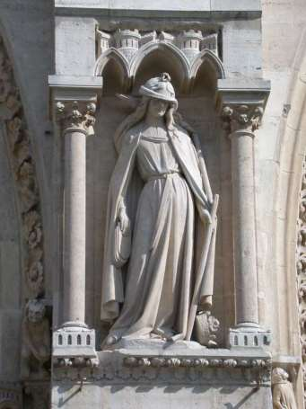
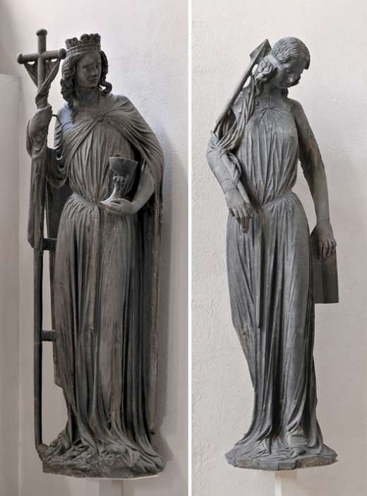

(Lettre ouverte de Jean Richard Mansencal, à l’attention de M.R. Macina, pour la section « À vous la parole », d’Academia.edu) Limoges, le 09 juin 2020, Fête de l’Ascension du Seigneur Jésus
Mon très Cher Menahem
Tu es quotidiennement dans ton jardin, il fleurit tous les jours, et j’ai pris un peu de retard dans la cueillette! Tu accomplis un travail considérable. Tes écrits sont maintenant sauvegardés et lus sur Academia. La fructification de tes écrits dépend du Seigneur et de ceux qui, parmi tes lecteurs, avec Lui et en Lui, en distribueront les fruits. Je recueille tout cela dans la prière. Cela va au-delà d’une lecture attentive. Ces écrits demeurent dans le tréfonds de mon cœur, je voudrais en constituer un mémento, un carnet de route qui accompagnera ma prière. Qu’en penses-tu?
La lettre que tu vas lire est sans doute trop longue, et elle est peut-être ennuyeuse. J’ai voulu en effacer la plupart des paragraphes. Ce n’est qu’une paraphrase de ce que j’ai principalement reçu de vous, Mark Kinzer et toi, et de Jean-Miguel Garrigues et Aron Jean- Marie Lustiger. N’hésite pas à corriger ce qui est inexact, ou à m’indiquer ce que je dois larguer comme un poids inutile pour la navigation. J’ai l’impression d’être en pleine mer, déjà très loin des côtes.
Concernant le virus venu de Chine, il est prudent pour vous aussi de rester à l’abri, de ne jamais sortir en public sans un masque de protection sur le visage. Ce qui est bon maintenant pour se protéger et protéger autrui, surtout les plus fragiles, devrait aussi être appliqué dans la période de dé-confinement – au moins jusqu’à ce que le virus disparaisse de la circulation, si toutefois il disparaissait.
Gigi est fatiguée…, tousse parfois beaucoup. Ces derniers jours sont un peu difficiles. Elle veut revoir son médecin sans tarder. Son moral est souvent en berne, ce qui n’est pas sans effets sur le mien.
La petite communauté des personnes âgées qui venaient à la chapelle n’a pas été contaminée par le virus et attend notre retour. Le retour sera prudent, la période du dé- confinement pourrait en France ressembler à la charge sur les Romains du petit village gaulois d’Astérix et Obélix, et donc remettre en danger les personnes âgées et les plus fragiles. Ma petite barque est remplie de malades, certains dans une très grave situation, mais je reste malgré tout confiant dans nos prières. Je les confie à votre prière.
Ici, je garde une activité physique; les travaux de jardinier-débroussailleur ne manquent pas de l’autre côté de la clôture, sur le remblai de la voie ferrée – qui est laissée à l’abandon pratiquement toute l’année. Et je veille à garder propre le petit jardin bien fleuri de Gigi. Je m’assieds aussi avec le chapelet durant quelques minutes sur la terrasse pour ‘prendre’ un peu le soleil quand il se montre. Je prie et le chant des oiseaux m’émerveille. J’ai repris la marche, avec mon tchotki.
******
La judéophobie, l’accusation de « meurtre rituel » et ses avatars, l’antisémitisme/antisionisme, la pensée conspirationniste et les « théories du complot » sont des péchés, ce sont des ‘folies’ enracinées dans la haine et l’envie, la jalousie. A la racine de tant de divagations, à l’origine d’un fanatisme aussi monstrueux, il y a un aveuglement haineux devenu pervers. Sur ces questions brûlantes, le travail accompli par Pierre-André Taguieff est d’une remarquable envergure historique et profondeur philosophique.
Effaré, je vois l’antisémitisme/antisionisme continuer à se répandre sur la Toile, avec ses appels aux meurtres à peine voilés.
Dernier exemple en date, les élucubrations du site strategika.fr, avec notamment le livre: « Notre-Dame, Al Aqsa et le troisième Temple. La géopolitique des religions » de Pierre-Antoine Plaquevent et Youssef Hindi. La liste des ouvrages proposés par le site nous indique l’enracinement antisioniste, anti-Israël, des intervenants. Un coup d’œil sur leur ligne éditoriale suffit à le confirmer.
Les enseignements de Youssef Hindi sur le sionisme, le Judaïsme, la Torah et la kabbale sont des divagations totalement à charge contre les Juifs et le sionisme. Nous retrouvons-là le narratif de Pierre Hillard, autre loup déguisé en brebis, qui n’hésite pas à cracher son venin sur le Cardinal Ratzinger, qu’il nomme « le serpent ».
Plusieurs maisons d’éditions ‘ultra traditionalistes’, comme – Editions de Chiré, diffusion de la pensée française – vendent des vies de saints, et, simultanément, des ouvrages sérieusement criminels à l’encontre des Juifs. Leurs auteurs ont tous bu à une source empoisonnée: ‘Les Protocoles des Sages de Sion’, dont le texte est sans cesse remis à l’ordre du jour, sous un nouveau masque.
La librairie ‘Livres en famille’ propose ainsi un livre ancien – L’antéchrist et les juifs – de Franz Spirago, (1920). Ce livre a été réédité, traduit de l’allemand et préfacé par Laurent Glauzy, autre activiste vindicatif, compagnon de Paul Hillard.
Ces hommes se proclament défenseurs de la Foi catholique, défenseurs de l’Ancien et du Nouveau Testament… en oubliant ce que le Seigneur a dit à la Samaritaine: « Le Salut vient des Juifs », ce Peuple dont Il est le Roi.
Voici le quatrième de couverture de L’antéchrist et les juifs (Ed. Maison du Salat): Il trônera à Jérusalem mais demeurera aussi à Rome... D'une actualité brûlante, il montre avec précision l'imminence du règne de l'Antéchrist. Il fournit des réponses complètes et impressionnantes sur cet homme aux ordres de Satan qui bouleversera le monde. Nous constatons à la lecture des prophéties de sainte Hildegarde, saint Grégoire le Grand, saint Anselme, saint Irénée, saint Augustin, la réalisation prochaine de son avènement (*). Très peu de livres sont parus sur ce thème comme s'il fallait tenir cachés les plans de l'élite occulte qui dirige réellement le monde. Politiquement, il ne fait aucun doute que le sionisme entre dans cette perspective. Il est prophétisé en effet que l'Antéchrist qui réhabilitera l'Islam et persécutera les Chrétiens naîtra d'une juive et que les Juifs retourneront en Israël. A travers l'Antéchrist, Satan sera à la tête d'une dictature mondiale sans égale.
Il inventera des instruments de contrainte et de contrôle à partir de nouvelles technologies. Et, les livres défendant la foi chrétienne seront brûlés. Par ses prodiges, l'Antéchrist détournera même les meilleurs Chrétiens de la vraie foi.
[(*) Voici une interprétation biaisée de leurs écrits]
Le sommaire de ce livre est affligeant. Franz Spirago ne lançait-t-il pas un appel, à peine voilé, à exterminer les Juifs? Dans la vision de Franz Spirago, les Juifs sont les serviteurs de l’Antéchrist dont ils préparent la venue. Pour affirmer de telles inepties, il faut divaguer.
Le livre de Franz Spirago a été édité en 1920, Hitler a émergé politiquement en 1933. Le clergé catholique allemand, à l’époque, n’a jamais cru bon de lutter contre cette littérature accusatrice des Juifs et diffusée depuis des lustres dans le monde catholique [et protestant]. C’était une ‘vérité’ largement partagée chez les catholiques, de Haut en bas dans le personnel de l’Église, ce qui est corroboré par l’étendue du silence et de l’inaction des Chrétiens durant la Shoah.
La rumeur du complot judéo-maçonnique, puis judéo-maçonnique bolchévique [avec toutes les bêtises qui ont pu être diffusées à ce sujet] cristallisait les craintes de l’épiscopat catholique… La littérature est abondante à ce sujet, effrayante en considération d’un mensonge pris comme une vérité sans la moindre véritable enquête.
« Léo Taxil a berné durant des années des milliers de lecteurs crédules: des Chrétiens, dont des prêtres, des évêques, le Pape, mais aussi des Francs-maçons » écrit Guy Gaucher dans sa biographie de la petite Thérèse.
Un tel épisode, humiliant, a-t-il servi de leçon aux Chrétiens? Non.
Dans cette littérature accusatrice et criminelle, les Juifs étaient regardés comme des pervers manipulateurs, des suppôts de Satan. Le Projet sioniste visait la domination du monde depuis Jérusalem. C’est le narratif que nous retrouvons un siècle plus tard sur le site strategika.fr.
Appelons cette communauté de penseurs, très en vogue sur la Toile, la communauté des Très-Purs, ou, les nouveaux cathares. Ces nouveaux cathares diffusent des 'vérités', mais ce sont des 'vérités' incluses dans un discours empoisonné par la haine des Juifs, autrement dit sous tutelle de la méchanceté des Puissances spirituelles qui sont dans les cieux.
Les racines de ce discours me semblent « démoniaques », et pourraient être séduisantes, voire envoûtantes, pour des gens qui ne connaissent ni l’histoire biblique du Peuple d’Israël ni sa Tradition spirituelle.
« Celui qui déclare être dans la lumière et qui a de la haine contre son frère est dans les ténèbres jusqu’à maintenant. Celui qui aime son frère demeure dans la lumière, et il n’y a en lui aucune occasion de chute. Mais celui qui a de la haine contre son frère est dans les ténèbres: il marche dans les ténèbres sans savoir où il va, parce que les ténèbres ont aveuglé ses yeux ». (Première Lettre de saint Jean, 9-11)
Les Très-Purs sont mus par une idéologie totalitaire, haineuse – la haine des Juifs. Ils sont ‘lumineux’ dans leurs explications géopolitiques, ils ont la clef, le code expliquant tout: c’est le messianisme, le sionisme [confondu avec le messianisme de Jacob Frank (qui est un faux messie pour les Juifs) ou avec l’activité d’un G. Soros (‘mondialiste’ antisioniste, qui rêverait de pouvoir effacer Israël, la Patrie du Peuple juif et qui s’y emploie autant qu’il le peut)].
Les Très-Purs ont donc un bouc émissaire, les Juifs, sempiternels suppôts de Satan et Peuple déicide. Le messianisme des Juifs qu’ils décrivent est un messianisme ‘diabolique’ qui viserait un Pouvoir absolu dans l’organisation totalitaire et pyramidale du Nouvel Ordre mondial. Selon leurs oracles, les Très-Purs savent bien sûr que les Juifs provoquent, par l'organisation du chaos, l'accouchement de ce Nouvel Ordre mondial. C’est un résumé, mais il décrit en mots simples ce qu’est l’idéologie de ces Très-Purs.
Les dégâts spirituels et politiques découlant de cette littérature haineuse, antisémite/antisioniste, peuvent être considérables. Combien de lecteurs et d’auditeurs, séduits par ce narratif, ne veulent plus entendre que ces Très-Purs qui ont l’art de piéger les gens en dénonçant le globalisme économique et le pouvoir des banques centrales [BRI & banques centrales qui contrôlent la monnaie et les flux financiers sur la planète]?
Ce miroir aux alouettes leur permet d’attirer des passereaux sur la Toile, et d’attraper ainsi des êtres en manque de ‘certitudes’ métaphysiques et politiques, en manque de nourriture spirituelle, aussi. Une fois la pilule avalée, apparaît le discours clef sous-jacent qui développe la raison cachée du malheur du monde: c’est un Pouvoir pyramidal ‘secrètement’ organisé par les Juifs adeptes du sionisme.
Pétri de mensonges et assassin, le narratif des Très-Purs fructifie chez les islamistes et les nostalgiques du national-socialisme. Les paroles que le Seigneur adressait à ceux qui voulaient Le tuer, s’adressent aujourd’hui à tous ceux qui veulent exterminer Son Peuple.
Vous, vous êtes du Diable, c’est lui votre père, et vous cherchez à réaliser les convoitises de votre père. Depuis le commencement, il a été un meurtrier. Il ne s’est pas tenu dans la vérité, parce qu’il n’y a pas en lui de vérité. Quand il dit le mensonge, il le tire de lui-même, parce qu’il est menteur et père du mensonge. (L’Evangile selon saint Jean 8, 44)
1920-2020, un siècle de mensonges, et des centaines de livres écrits, diffusés, pour alimenter les peurs et la haine des Juifs. Nous sommes en relations parfois intimes avec des Chrétiens qui croient de bonne foi à de telles élucubrations, et qui les alimentent encore un peu plus en les reprenant dans leurs propres écrits. C’est la Pandémie d’un virus mortel pour les âmes, et cela ne soucie toujours pas nos Pasteurs.
Le lachone hara, la médisance, « le langage du mal », est un péché particulièrement honni dans le Judaïsme, tant dans la Bible hébraïque que dans la littérature rabbinique. Il fut la cause de nombreuses tragédies pour le Peuple juif et pour le monde entier, et ce, depuis le début de l’histoire. Le venin de la médisance a trop souvent jailli du cœur des Chrétiens, comme une mauvaise habitude.
Avec le recul donné par l’écoulement du temps, après la Shoah, personne ne s’est demandé si le Diable n’avait pas orchestré cette grande fresque présentant les Juifs comme des êtres retors et démoniaques, afin d’annihiler le discernement et le courage des Chrétiens au moment où il susciterait et déclencherait la Solution finale, l’extermination totale des Juifs. Le Régime nazi était totalitaire et carrément diabolique, à l’instar du Régime communiste et de l’Islamisme.
Parce que la diffusion de ce virus mortel a entraîné avec un succès incomparable l’extermination des Juifs, son vœu le plus cher, Satan continue de plus belle afin de réitérer son exploit… Comment défendre la vérité face à ces nouveaux ‘cathares’ qui ont donné leur langue au Diable?
Ces Très-Purs voudraient éliminer les Juifs – une élimination qui n’est évidemment pas ouvertement évoquée … mais dont le projet attend toujours derrière la porte du Prince de ce monde.
« Notre combat n’est pas contre le sang et la chair, mais contre les Principautés, contre les Autorités, contre les Dominateurs de ces ténèbres, contre les Puissances spirituelles de la méchanceté dans les cieux ». (Lettre de saint Paul aux Éphésiens 6, 12)
Il semble inutile de débattre avec les Très-Purs, car ils refuseront de se remettre en cause. Ils ne liront jamais Les Protocoles des sages de Sion: Faux et usages d'un faux (Documents) de Pierre-André Taguieff.
Les Très-Purs ont la science infuse. Ils n’apprendront rien d’Alexandre Safran, ne liront jamais les bouquins d’un rabbin qui s’est très tôt engagé dans le rapprochement judéo- chrétien. Son ouvrage La Cabale (Payot) serait pourtant en mesure de les guérir de leur aveuglement haineux. Les Très-Purs ne liront pas non plus Quand Israël aime Dieu (Cerf)de Jean de Menasce.
La diffusion d’un narratif anti-juif, antisioniste, très bien relayé par les islamistes, prend-elle le contrôle spirituel d’une communauté d’individus de plus en plus nombreuse en France et en Europe? Cela me fait penser à ce qui est survenu en Allemagne, avec Hitler et le nazisme.
Tout cela m’inquiète, car j’en constate les effets délétères sur des proches.
******
Navigant avec tes écrits et ceux de Mark Kinzer, ceux de Jean-Miguel Garrigues et de Jean-Marie Lustiger, je veille en priant.
Contemplation du Mystère de l’Eglise du Christ
Dans la Lettre de saint Paul aux Ephésiens (1, 17-23)
Frères, que le Dieu de notre Seigneur Jésus Christ, le Père dans Sa gloire, vous donne un Esprit de sagesse qui vous Le révèle et vous Le fasse vraiment connaître. Qu’il ouvre à Sa lumière les yeux de votre cœur, pour que vous sachiez quelle espérance vous ouvre Son appel, la gloire sans prix de l’Héritage que vous partagez avec les fidèles, et quelle puissance incomparable Il déploie pour nous, les croyants: c’est l’énergie, la force, la vigueur qu’Il a mise en œuvre dans le Christ quand Il L’a ressuscité d’entre les morts et qu’Il L’a fait asseoir à Sa droite dans les Cieux.
Il L’a établi au-dessus de tout être céleste: Principauté, Souveraineté, Puissance et Domination, au-dessus de tout nom que l’on puisse nommer, non seulement dans le monde présent mais aussi dans le monde à venir.
Il a tout mis sous Ses pieds et, Le plaçant plus haut que tout, Il a fait de Lui la Tête de l’Église qui est Son Corps, et l’Église, c’est l’accomplissement total du Christ, Lui que Dieu comble totalement de Sa plénitude.
Dans la Lettre de saint Paul aux Romains (11, 16-36)et auxEphésiens (2, 10-18), voici des versets dont l’importance est fondamentale pour la compréhension du Dessein de Dieu. Ils sont une lumière de vie, une lumière vivifiante. Et dans cette lumière vivante et vivifiante pour notre transformation en Christ, nous apprenons que deux Peuples sont unis en Lui, les Juifs et les Gentils.
Une question nous est posée par le Seigneur: qu’avez-vous fait de Mon Peuple, vous, leurs frères issus de la Gentilité?
Lettre aux Romains (11, 16-36)
Si la partie de la Pâte prélevée pour Dieu est sainte, toute la Pâte l’est aussi; si la Racine de l’arbre est sainte, les branches le sont aussi. De ces branches, quelques- unes ont été coupées, alors que toi, olivier sauvage, tu as été greffé parmi les branches, et tu as part désormais àla Sève que donne la Racine de l’Olivier.
Alors, ne sois pas plein d’orgueil envers les branches; malgré tout ton orgueil, ce n’est pas toi qui portes la Racine, c’est la Racine qui te porte. Tu vas me dire: « Des branches ont été coupées pour que moi, je sois greffé! » Fort bien! Mais c’est à cause de leur manque de foi qu’elles ont été coupées; tandis que toi, c’est par la foi que tu tiens bon. Ne fais pas le fanfaron, sois plutôt dans la crainte. Car si Dieu n’a pas épargné les branches d’origine, Il ne t’épargnera pas non plus. Observe donc la Bonté et la Rigueur de Dieu: Rigueur pour ceux qui sont tombés, et Bonté de Dieu pour toi, si tu demeures dans cette Bonté; autrement, toi aussi tu seras retranché.
Quant à eux, s’ils ne demeurent pas dans leur manque de foi, ils seront greffés car Dieu est capable de leur redonner leur place en les greffant. En effet, toi qui étais par ton origine une branche d’olivier sauvage, tu as été greffé, malgré ton origine, sur un olivier cultivé; à plus forte raison ceux-ci, qui sont d’origine, seront greffés sur leur propre olivier.
Frères, pour vous éviter de vous fier à votre propre jugement, je ne veux pas vous laisser dans l’ignorance de ce Mystère: l’endurcissement d’une partie d’Israël s’est produit pour laisser à l’ensemble des nations le temps d’entrer.
C’est ainsi qu’Israël tout entier sera sauvé, comme dit l'Écriture: De Sion viendra le Libérateur, Il fera disparaître les impiétés du milieu de Jacob. Telle sera pour eux Mon Alliance lorsque J’enlèverai leurs péchés.
Certes, par rapport à l’Évangile, ils sont des adversaires, et cela, à cause de vous ; mais par rapport au choix de Dieu, ils sont des bien-aimés, et cela, à cause de leurs pères. Les dons gratuits de Dieu et son appel sont sans repentance. Jadis, en effet, vous avez refusé de croire en Dieu, et maintenant, par suite de leur refus de croire, vous avez obtenu miséricorde; de même, maintenant, ce sont eux qui ont refusé de croire, par suite de la miséricorde que vous avez obtenue, mais c’est pour qu’ils obtiennent miséricorde, eux aussi. Dieu, en effet, a enfermé tous les hommes dans le refus de croire pour faire à tous miséricorde.
Quelle profondeur dans la Richesse, la Sagesse et la Connaissance de Dieu! Ses décisions sont insondables, Ses chemins sont impénétrables ! Qui a connu la Pensée du Seigneur? Qui a été Son conseiller? Qui Lui a donné en premier et mériterait de recevoir en retour? Car tout est de Lui, et par Lui, et pour Lui. À Lui la Gloire pour l’éternité! Amen.
Lettre aux Ephésiens (2, 10-18)
Rappelez-vous donc qu'autrefois, vous les païens – qui étiez tels dans la chair, vous qui étiez appelés "prépuce" par ceux qui s'appellent "circoncision",... d'une opération pratiquée dans la chair! – rappelez-vous qu'en ce temps-là vous étiez sans Christ, exclus de la cité d'Israël, étrangers aux alliances de la Promesse, n'ayant ni espérance ni Dieu dans le monde!
Or voici qu'à présent, dans le Christ Jésus, vous qui jadis étiez loin, vous êtes devenus proches, grâce au Sang du Christ. Car c'est Lui qui est notre paix, Lui qui des deux a fait un, détruisant la barrière qui les séparait, supprimant en Sa Chair la haine, cette Loi des préceptes avec ses ordonnances, pour créer en Sa Personne les deux en un seul Homme Nouveau, faire la paix, et les réconcilier avec Dieu, tous deux en un seul Corps, par la Croix: en Sa Personne Il a tué la haine.
Alors Il est venu proclamer la paix, paix pour vous qui étiez loin et paix pour ceux qui étaient proches: par Lui nous avons en effet, l’un et l’autre, en un seul Esprit, accès au Père…
Ce Mystère est au cœur de ma prière, et je prends des notes, dans des livres ou dans Wikipédia, qui m’aident à constituer un bref historique permettant d’aborder avec un peu d’altitude, non seulement l’origine de l’antagonisme initial entre les Juifs et les Gentils devenus disciples du Christ Jésus, mais aussi l’évolution de cet antagonisme au cours du temps, et ses conséquences sur les deux Communautés respectivement, Israël et la Synagogue d’un côté, et, de l’autre, une Eglise de Gentils qui disloqua l’unité de l’Eglise apostolique après avoir fait disparaître l’Eglise de Jérusalem?
Ce qui suit ne sera pas d’un grand intérêt pour toi, tu sais déjà tout cela, mais ces notes prises au vol accompagnent si j’ose dire ma méditation. Je larguerai par-dessus bord ce qui n’est pas fondé en vérité, ou ce qui est un poids inutile pour la navigation. Tu peux émonder le petit arbre.
Après le siège de Jérusalem et la destruction du Temple en 70, puis la grande dispersion, le Sanhédrin se recomposa. Réfugié un temps à Yavné, il resta la seule autorité juive tolérée par Rome, et son président fut choisi parmi les descendants d’Hillel l’Ancien.
Mark Kinzer note dans Le Messie d’Israël et le Peuple de Dieu (Parole et Silence) que ce sont les disciples de Hillel qui ont donné forme au Judaïsme rabbinique.
L’ouvrage de Jacqueline Genot-Bismuth – Un homme nommé Salut (F-X de Guibert) – illustre l’antagonisme existant entre les Sadducéens et les Pharisiens et en situe le développement historique au sein d’une nation dont l’indépendance initiée par la révolte maccabéenne (167 avant JC), donna naissance au royaume hasmonéen (pleinement indépendant en 110).
[Le royaume hasmonéen aura duré à peine un siècle; il s’effondra au printemps 63 dans une guerre civile. La lutte fratricide qui opposait les deux fils d’Alexandre Jannée provoqua l’intervention de Pompée, général romain. Celui-ci s'empara de Jérusalem et, introduisant la puissance romaine, fit de la Judée un protectorat romain. Les Romains donnèrent à Hyrcan II le titre d'« ethnarque » et de « grand- prêtre », en ayant soin de le doubler par un conseiller, Antipater, un Iduméen converti au judaïsme.
Le fils de celui-ci, Hérode, se fera reconnaître « roi des Juifs » par le Sénat romain en 40 avant notre ère, et ira reconquérir le pays avec les Romains jusqu'en 37. En effet, les Parthes avaient envahi la Syrie-Palestine en 40 et soutenu Antigone II Mattathiah, un fils d'Aristobule II, roi et grand prêtre hasmonéen mais sous protectorat Parthe, comme prétendant au trône de Judée au détriment d’Hyrcan II, qu'ils avaient emmené en captivité.
Après l'exécution d'Antigone II, en 37, Hérode le Grand régna sur la Judée. Grand bâtisseur, utilisant la technologie romaine, Hérode se lança dans de grands travaux de construction de 29 à 9 avant JC: théâtre et amphithéâtre de Jérusalem, puis reconstruction du Temple de Jérusalem à partir de 20, qui est un immense chantier où travaillent jusqu'à dix mille ouvriers. Il restaure la forteresse du Temple, l'Antonia, et les murailles de Jérusalem, fonde et rebâtit de nombreuses autres villes. Sa mort est située entre - 4 et +1. Ce fils de converti Iduméen aura été le dernier roi de Judée.
Hérode acquit à juste titre la réputation d’être un tyran sanguinaire. Afin de limiter le pouvoir des familles sacerdotales attachées au Temple de Jérusalem, Hérode nomma de préférence des grands prêtres d'origine étrangère (égyptienne ou babylonienne), et ces derniers furent à l´origine des familles qui fournirent la plupart des grands prêtres qui ont officié jusqu'à la destruction du Second Temple.
Après sa mort, les grands prêtres seront nommés par le Pouvoir romain. Ainsi, le gouverneur de Syrie Quirinius nomma Hanan ben Seth (ou Hanne, celui des Evangiles). Le Préfet de Judée Valerius Gratus, quatrième Préfet romain de Judée (15 à 26 ap. JC), fut remarquable par les changements fréquents qu'il apporta au poste du grand prêtre d'Israël.
Ainsi, il déposa Hanan ben Seth (Hanne) et lui substitua Ishmael ben Phabi (Ismaël, fils de Phabi) (15-16); puis Eleazar, un fils d’Hanan ben Seth (16-17); ce fut ensuite Simon, le fils de Camith (17-18) et finalement Joseph Caiaphas (traditionnellement appelé Caïphe dans les Evangiles), gendre d' Hanan ben Seth (18-36). Notons que Valerius Gratus fut remplacé par Ponce Pilate.]
Extraite des Personnages du Talmud(Albin Michel) du Rav Adin Steinsalz, la digression suivante apparaît elle aussi éclairante. J’ai noté:
[Shammaï (mort en 30 après JC.) fut contemporain d'Hillel, et comme lui, une figure majeure de la Mishna. Shammaï et Hillel forment le couple de Sages le plus célèbre de l'histoire talmudique. Ils sont en constant désaccord sur la Halakha, et on ne les mentionne pratiquement jamais l'un sans l'autre (exception notoire: les Pirke Avot).
Shammaï était entièrement dévolu à l'application la plus stricte des prescriptions rituelles en tout domaine. Il fut élu Av Bet Din (vice-président du Sanhédrin) lorsqu'Hillel en était le Nassi (président). À la mort de celui-ci, vers 20, Shammaï prit sa succession, et comme aucun vice-président ne fut élu, il eut l'ascendant total sur la politique et la religion en Terre d'Israël.
Le Talmud porte des jugements extrêmement sévères durant son mandat. Ainsi, dans le traité Shabbat 17a, la période pendant laquelle il promulgua ses 18 ordonnances est aussi mal vue que le jour où le Veau d'Or fut construit! Quant au Talmud de Jérusalem, il affirme qu'une voix céleste a annulé la légalité de ses décisions, raison pour laquelle on s'est toujours conformé à l'opinion de l'école d'Hillel (Berakhot 1:7).
Rabban Gamaliel I, petit-fils de Hillel, lui succéda à la tête du Sanhédrin en 30, mais l'influence de l'école de Shammaï persista jusqu'en 70, année de la destruction du Second Temple ».]
L’Eglise primitive édifiée par les Apôtres, dans laquelle les Juifs et les Gentils vivaient en frères, est devenu au fil du temps une Assemblée de la Gentilité du fait de la disparition progressive des communautés judéo-chrétiennes.
Aaron Jean-Marie Lustiger note que « l’Eglise de Jérusalem n’a vécu, au plus tard, que jusqu’au VIème siècle ».
Un bref historique en est donné dans ses ouvrages La Promesse (Parole et Silence)(p 16 à 18 / L’Eglise « catholique » c’est-à-dire « selon la totalité ») et L’Alliance (Presses de la Renaissance) (p 219 à 223 / Le temps de l’histoire et l’histoire du monde).
Extrait du livreLa Promesse(p 16 à 18 / L’Eglise « catholique » c’est-à-dire « selon la totalité »). Entretiens spirituels donnés au monastère de sainte Françoise Romaine du Bec Hellouin en 1979.
L’Eglise apparaît comme « catholique », pour utiliser un terme qui sera adopté ultérieurement, c’est-à-dire « selon la totalité ». Elle est selon la totalité parce qu’elle est l’Eglise des Juifs et des Païens. Elle accomplit le mystère du salut de toutes les nations puisqu’elle réunit les deux catégories qui divisent l’histoire: celle qui participe de l’Election, Israël, et celle qui n’y avait pas droit. Pour les uns comme pour les autres, le Salut est donné comme une grâce, et une grâce gratuite.
Cette Eglise est « selon la totalité » car cette « assemblée de Dieu » est prise parmi les Juifs comme parmi les Païens. Elle ne peut subsister comme Eglise que dans le mystère de la grâce faite à Israël. Dans ce mystère les Païens doivent reconnaître un don qui leur est fait gratuitement. Réciproquement, en découvrant le don fait aux Païens, Israël doit reconnaître que ce qu’il a reçu est une grâce et non un dû.
Dans ce mystère réciproque de gratuité, l’un sert de témoin à l’autre. Chacun atteste pour l’autre la gratuité absolue du don de Dieu, en même temps qu’il permet de mesurer l’universalité du péché, c’est-à-dire du pardon de Dieu, puisque le péché ne se révèle que dans la miséricorde. Parce que Dieu fait complètement miséricorde à Israël, celui-ci peut découvrir que la même grâce est donnée aux Païens; et dans la mesure où les Païens reconnaissent le don gratuit qui leur est accordé d’avoir part au don fait à Israël, la grâce de Dieu se manifeste dans toute sa splendeur.
Dans cette première Eglise, le statut des églises pagano-chrétiennes commence à être fixé. Elles ne sont pas dispensés d’observer la Loi; si les Païens n’observaient pas la Loi, ils n’auraient part ni à l’Election ni à la grâce; mais le don de l’Esprit, grâce du Messie, permet d’observer la Loi autrement qu’Israël qui, lui, demeure chargé de ce fardeau délicieux de l’observance. *
L’Eglise de Jérusalem est donc, dans l’Eglise catholique, la permanence de la Promesse faite à Israël, la présence de l’accomplissement, l’attestation de la grâce faite aux Païens. Ainsi l’Eglise est à la fois celle des Juifs et des Païens.
Cette Eglise de Jérusalem n’a vécu, au plus tard, que jusqu’au VIème siècle. C’est là un des grands mystères de l’histoire et peut-être un grand drame spirituel non achevé. Car on ne peut pas dire que ce soit une affaire réglée, pas plus que la séparation de l’Eglise d’Orient et de l’Eglise d’Occident. Cela fait partie de ces blessures, de ces péchés que nous devons bien reconnaître, qui nous jugent et où nous devons attendre de Dieu qu’Il fasse quelque chose en conformité avec sa Promesse.
Cette Eglise de Jérusalem a été détruite sous la pression de Byzance. C’est là sans doute une des pertes majeures de la conscience des Chrétiens. La mémoire de la grâce qui avait été faite fut ainsi pratiquement refoulée, je ne dis pas par l’Eglise en tant qu’Epouse du Christ, je dis par les Chrétiens. Voilà pour eux une cause de tentation et une épreuve spirituelle, une cause d’infidélité au Christ; voilà un des problèmes majeurs du christianisme.
[Note *: « Ta Loi fait mes délices » (Ps 119, 174 ; voir aussi 119, 24. 77. 92. 143). La Loi est souvent comparée au « joug » posé sur les épaules de l’animal; cf Sophonie 3, 9 ; Jérémie 2, 20 et Siracide 51, 26. Jésus reprend l’image: « Mon joug est aisé et mon fardeau léger » (Matthieu 11, 30).]
Extrait deL’Alliance (p 219 à 223 / Le temps de l’histoire et l’histoire du monde).
(…) Il ne resta pour les juifs que la Synagogue… La Diaspora s’organisa, les Juifs entrèrent dans cette épreuve, comme déjà lors de l’exil à Babylone, en un immense acte de Foi, patiente et suppliante, pour que Dieu manifeste sa Gloire et accomplisse ses promesses.
Toute l’existence des communautés juives fut entièrement absorbée, dans la prière et la fidélité, par l’accomplissement de leur vocation divine. L’on pourrait dire, en empruntant une notion chrétienne, qu’elle devint « monastique », à l’image de ce qu’étaient peut-être déjà les communautés esséniennes.
Pendant des siècles, les Juifs ne participèrent à l’histoire des hommes qu’à la marge, pour vivre et survivre. Ils se laissèrent, d’une certaine façon, enfouir dans l’histoire pour être les témoins de leur foi et de la prophétie. Cachés dans l’histoire et absents de l’histoire, sinon par leur malheur et par leurs persécutions, sans terre propre, sans citoyenneté, usant des langues des nations accommodées à leur particularité, mais gardant dans le cœur de la prière la langue de la Révélation, ils étaient présents partout et absents de tout.
Privé des assises concrètes et historiques de son existence par la destruction du Temple et la dispersion du Peuple au sein des Empires, Israël a concentré toutes ses forces sur l’attente de l’achèvement de l’histoire. (…)
Les Chrétiens des Nations, quant à eux, auraient dû garder conscience qu’ils recevaient gratuitement, comme une grâce imméritée, d’avoir une part à ce que Dieu a donné à Israël. Ils ont été constamment tentés, au cours de ces deux millénaires, de ramener aux particularités de leur histoire l’ultime accomplissement du dessein divin, alors que celui-ci demeure toujours à attendre. (…)
Souvent, l’Eglise elle-même, occupant l’espace des pouvoirs temporels, se présenta comme la réalisation ici-bas du Royaume d’En-Haut. (…)
La figure du Juste souffrant, en particulier tel qu’il se présente dans le chapitre 53 d’Isaïe, demeure le lieu commun aux Juifs et aux Chrétiens, mais où la contradiction atteint en même temps sa plus grande intensité.
D’abord, parce que la foi de tout croyant, Juif ou Chrétien, trébuche sur ce qu’il ressent comme une incompréhensible injustice de Dieu… Ensuite, parce que le texte même de l’Ecriture désigne sous cette figure Israël, mais aussi un sujet messianique.
La douleur de l’histoire, et ses aveuglements nous ont obscurcis, Chrétiens et Juifs, au point de ne reconnaître ni Israël en son Messie, ni le Messie caché en Israël. Le temps de l’histoire n’a-t-il été le temps des nations que pour laisser germer en elles la semence d’Israël? (…)
Juifs et Chrétiens se sont méconnus et méprisés dans l’obscurité de l’histoire; ils se sont contrariés dans leur espérance du rassemblement des derniers jours. Divisés dans l’intelligence de la même Election et de la même attente, ils se sont encore fragmentés dans l’attente de l’unité du genre humain.
Aaron Jean-Marie Lustiger
C’est dans une Eglise où la communauté judéo-chrétienne s’était éteinte, que les Chrétiens de la Gentilité ont placé sous le boisseau une partie des informations confiées par l’Esprit Saint aux Apôtres. Ces informations concernaient la vocation propre du Peuple juif dans le Dessein de Dieu.
Pour les Chrétiens, ce fut le déni d’une réalité et une infidélité à la Parole reçueet, dans certains cas, une trahison du Seigneur. Une lumière de vie pour que les Juifs et les Gentils vivent en frères dans le Christ, devant leur Père, a été repoussée, d’abord par quelques Juifs et ensuite par les Chrétiens de la Gentilité.
Une lumière de vie a été exilée, une grâce refusée, de part et d’autre.
Cependant, forts de leur nombre, profitant du bras de la puissance temporelle de l’Eglise, les Chrétiens sont allés jusqu’à poursuivre les Juifs et la Synagogue de leur haine, alors que le harcèlement de Juifs zélés qui voulaient contraindre des Chrétiens issus de la Gentilité à vivre scrupuleusement selon toutes les prescriptions de la Loi avait disparu depuis longtemps, très longtemps…
En rejetant Jésus, les Juifs ont finalement accompli le Dessein de Dieu.
Actes 3, 17-21 : « Frères, je sais que c’est par ignorance que vous avez agi, ainsi d’ailleurs que vos chefs. Dieu, Lui, a accompli de la sorte ce qu’Il avait annoncé par la bouche de tous les prophètes, que Son Christ souffrirait. Repentez-vous donc et convertissez-vous, afin que vos péchés soient effacés et qu’ainsi le Seigneur fasse venir le temps du repos. Il enverra alors le Christ qui vous a été destiné: Jésus, Celui que le Ciel doit garder jusqu’aux temps de l’entrée en vigueur de tout ce que Dieu a dit par la bouche de ses saints prophètes de toujours ».
Comment les Chrétiens ont-ils pu maudire et persécuter, comme ils l’on fait des siècles durant, leurs frères aînés? La parabole de la paille et de la poutre n’illustre-telle pas une habitude malheureusement très répandue chez les Chrétiens?
Évangile selon saint Luc, 6, 41 : « Pourquoi vois-tu la paille qui est dans l'œil de ton frère et n'aperçois-tu pas la poutre qui est dans ton œil à toi! », ou « Comment peux-tu dire à ton frère: Frère, laisse-moi ôter la paille qui est dans ton œil, toi qui ne vois pas la poutre qui est dans le tien? Hypocrite, ôte premièrement la poutre de ton œil, et alors tu verras comment ôter la paille qui est dans l'œil de ton frère. »
L’Apôtre Paul n’avait-il pas annoncé aux Juifs et aux Gentils qu’ils formaient dans le Christ Jésus, l’un etl’autre, le Juif etle Grec, un indivisible Corps que l’Esprit vivifiait et faisait croître dans la perspective de la Rédemption et de l’Avènement du Royaume?
Les Chrétiens n’ont décidément pas voulu entendre que l’unité des deux Peuples (Juda et Ephraïm, dans la typologie biblique) était déjà réalisée dans le Seigneur, et qu’un processus ‘humano-divin’, assimilable à la croissance d’une Vigne ou d’un Olivier franc – parmi les branches duquel le divin Jardinier avait greffé des branches d’olivier sauvage – était en train de transformer invisiblement, mais en profondeur, la vie et la prière de chacun des deux Peuples, l’un, devenu la Synagogue, et l’autre, l’Eglise des Gentils.
Les Chrétiens n’ont pas voulu recevoir et développer cette vérité qui les vivifie et les prépare avec les Juifs, selon des voies encore séparées, à l’Avènement du Royaume en Gloire sur cette terre, où, dans la fulgurance de la Gloire du Sauveur, apparaîtra leur Unité.
Les Chrétiens ont mis en avant une vision de l’Eglise du Christ triomphante qui n’était plus l’Epouse du Christ « selon la totalité ».
Oubliant la Racine qui les portait, les Chrétiens de la Gentilité, ont ainsi exclu de leur cœur Israël, le ‘bien propre’ de Dieu. Ils ont rejeté Juda, leur frère aîné; ce qui n’est pas sans ressemblance avec l’abandon de Joseph dans une fosse par ses frères.
La vision de l’Eglise du Christ – notamment sous son aspect pérégrinant – dans laquelle, pensant que le Seigneur Jésus et Ses Apôtres s’étaient débarrassés du Peuple juif, les Chrétiens se croyaient non seulement les nouveaux, mais aussi les seuls élus, était erronée, voire mensongère.
Le Mystère de l’Eglise du Christ décrit par l’Apôtre Paul est une source d’informations salutaires et essentielles. Mais celles-ci sont restées à la périphérie de la prière et de la théologie chrétienne durant presque deux millénaires. La présence d’Israël dans l’Eglise est une lumière dans la lumière de son propre Mystère.
En ôtant le voile qui nous cachait la présence d’Israël dans le Mystère de l’Eglise, Mark Kinzer vient nous délivrer d’une erreur et d’un mensonge. Voici, extraits de son livre Le Messie d’Israël et le Peuple de Dieu,quelques-uns des enseignements qui nourrissent ma prière.
L’Église devrait être considérée comme un Israël renouvelé, un Peuple de Dieu renouvelé / 215
L’Ekklesia comprend deux sous-communautés / 234
L’Ekklesia devient une extension d’Israël au lieu de se substituer à lui / 13
Garder l’unité de l’Ekklesia tout en préservant sa double nature essentielle / 168, 242
La restauration de la branche juive de l’Ekklesia est le facteur clé du redressement des torts historiques et de la guérison du schisme entre Juifs et Chrétiens / 22
Le rassemblement par Yeshoua d’une Ekklesia multinationale qui partage la vocation d’Israël oriente vers la sanctification par Dieu du monde entier / 19 * 133, 156, 157, 158, 163, 164, 168, 169, 170
Repenser la relation entre l’Église chrétienne et le Peuple juif dans le cadre d’une ecclésiologie bilatérale / 13, 20, 21, 22 * 105, 133, 230, 231, 234, 235, 241, 242, 243
Tandis que la branche juive de l’Ekklesia est liée par l’Alliance à l’obligation de vivre en Juifs, ce n’est pas le cas de la branche de l’Ekklesia des Gentils / 227
Yeshoua constitue le véritable Centre de la vie juive, tout comme Israël constitue le véritable Centre de l’Ekklesia de Yeshoua / 105
Yeshoua est comme un pont qui unit plutôt que comme un coin qui disjoint / 13
L’Ekklesia devient une extension d’Israël au lieu de se substituer à lui / 13
Israël écarté, parfois violemment rejeté par les Chrétiens de la Gentilité, c’est une lumière vivifiante du Mystère de l’Eglise du Christ qui a été placée sous le boisseau. Cette lumière toque timidement, sur votre invitation, à la porte de l’Eglise catholique romaine. Abandonnée dans la rue, cette petite fille en haillons qui rayonne de l’amour de l’Agneau, témoin de la Vérité vivante, attend à la porte de l’Eglise des Gentils qu’un Vincent de Paul la recueille…
Que les Chrétiens n’aient pas accueilli une vérité aussi fondamentale et se soient emprisonnés dans le pré carré de la théologie du remplacement ne change rien à la réalité de ce qu’est le nouvel et véritable Israël, autrement dit, n’altère en rien la réalité de ce qu’est l’Eglise indivise du Seigneur Jésus.
La réalité du Mystère de l’Eglise diffère certainement de la représentation réductrice qu’en ont eue très souvent les chrétiens durant des siècles; cependant, un développement de la théologie, qui accueille l’entièreté du Dessein de Dieu, est initié.
Avec profondeur, comme trois musiciens autour de la même partition, Jean-Miguel Garrigues, Mark et toi, vous développez la trame de ce Dessein d’amour miséricordieux. En écrivant cela, je ne voudrais pas laisser dans l’ombre Michel Remaud, Pierre Lenhardt, Jean- Marie Lustiger et Bernard Dupuy, Raïssa et Jacques Maritain, et tant d’autres, dont mon cher Vladimir Soloviev, tous amis d’Israël.
Nous comprenons que, non seulement le Seigneur S’est livré pour Son Eglise afin de la sanctifier car Il voulait Se la présenter à Lui-même toute resplendissante, sans tache ni ride ni rien de tel, mais sainte et immaculée, mais aussi que l’Accomplissement plénier de cette sanctification des deux Peuples, unis en un seul Corps, le nouvel et véritable Israël, n’est pas encore pleinement réalisé dans le temps du fait de la croissance – toujours en cours – de ce Corps.
Nous saisissons, enfin, que l’Homme Nouveau n’a pas encore atteint sa pleine stature et que le processus d’accomplissement de la Promesse divine est toujours en cours, que le Voyage n’est pas terminé, que nous ne sommes pas encore arrivés au Port. Ce développement théologique est également un remède qui peut délivrer les Chrétiens du poison de la théologie du remplacement, si subtilement orgueilleuse.
Lorsque nous considérons les énormes déviations de toutes les Eglises, de toutes les démonstrations, nous devons honnêtement nous poser la question: est-ce que devant Dieu nous existons encore? Lorsque nous assistons, dans maintes Eglises, à un rejet, parfois à une haine du Peuple juif et d’Israël, nous devons honnêtement nous poser la question: sommes-nous toujours greffés sur le véritable tronc? « Ne regarde pas le Juif de haut, mais crains!
(Ce Dieu injuste? Théologie chrétienne pour le peuple d'Israël – L’Olivier greffé – Arléa-
Poche) Jacques Ellul
Comment les Chrétiens ont-ils pu s’enorgueillir à ce point et oublier qu’ils avaient été greffés contre nature sur l’Olivier d’Israël, qu’ils n’étaient pas seuls dans la barque de l’Ekklesia du Christ ? « Dieu aurait-Il rejeté son Peuple? Certes non! » (…) « Une partie d’Israëls’est endurcie », mais « de Sion viendra le Libérateur et, ainsi tout Israël sera sauvé, comme il est écrit », nous confie l’Apôtre Paul.
Comment les Chrétiens ont-ils pu chanter le Magnificat en refoulant les dernières paroles de Marie « Il a porté secours à Israël Son serviteur, Se souvenant de Sa miséricorde, – ainsi qu’Il l’avait promis à nos pères, – en faveur d’Abraham et de sa descendance à jamais! »?
Les Chrétiens n’ont-ils pas été aveuglés par la jalousie et l’envie?
L’Eglise catholique, l’Eglise orthodoxe (avec ses ramifications), les Eglises protestantes, et, en un mot, les Chrétiens, n’ont pas réellement accueilli la totalité du Mystère de l’Eglise. Le sens eschatologique, le processus de la croissance temporelle de l’Eglise dans le Christ Jésus, n’a pas été développé par les théologiens chrétiens. Mais ce n’est pas une vérité nouvelle, la présence d’Israël dans la Personne du Christ est constitutive du Mystère de Son Eglise.
Le sens eschatologique du Mystère a été comme perdu de vue alors qu’il est pourtant présent, comme un bourgeon dans le processus biologique de développement de la fleur, dans la Théologie de l’Eglise du Christ.
Les Chrétiens n’ont pas contemplé cette lumière qui les auraient vivifiés parce qu’ils ne l’ont pas accueillie de tout leur cœur. Ils n’en ont pas développé les implications pour invoquer le Nom de L’Eternel et Le servir d’un seul cœur avec les Juifs, leurs frères aînés, dans leur prière liturgique eucharistique et leur prière secrète. Cette magnifique vérité a été oubliée sous l’escalier emprunté quotidiennement depuis des siècles par les théologiens.
Ma prière répond à ce que tu avais initié en nous invitant à prier avec le Patah Eliyahou (Les éditions Colbo).Depuis, le Peuple juif et la Synagogue sont dans mon cœur. Et c’est un vrai bonheur.
L’unité des deux Peuples, déjà réalisée en Christ, estvivifiante pour les Juifs et pour les Chrétiens – pour les Juifs disciples du Seigneur Jésus et pour ceux de la Synagogue et pour les Chrétiens de la Gentilité. La lumière du Christ, informant et vivifiant tout Son Corps, atteint donc le tréfonds cœur de chacun des deux Peuples, et les transforme en Lui. Le retour d’Elie, la restauration du Peuple juif dans ses prérogatives et le Salut, sont devant nous comme des évènements attendus et à venir.
Ce qui est déjà réalisé en la Personne ‘humano-divine’ de Jésus, sur le plan de l’unité des deux Peuples, peut donc vivifier notre prière intime si nous acceptons de répondre à l’invitation du Sauveur. C’est une invitation à prier et à agir dans l’amitié les uns pour les autres, Juifs et chrétiens.
Pour nous, Chrétiens, c’est une invitation à accueillir la prière d’Israël telle qu’elle s’est déployée dans la Synagogue depuis la destruction du Temple. Nous trouvons le Seigneur Jésus dans le Siddour. Je prie donc pour Israël, pour la Synagogue, dont je veux aussi connaître la Tradition. Je le veux par amitié, parce que Jésus nous invite à prier avec Lui pour Son Peuple bien-aimé – dont Il voit les terribles épreuves à venir – et parce que cela réjouit le Cœur de notre Seigneur.
Edith Stein a prié pour Israël et l’a accompagné dans l’Holocauste.
En contemplant le Mystère de l’Eglise, ce que les Chrétiens authentiques et pieux ont puisé et recueilli avec amour dans la Lumière divine n’appartient-il pas aussi en propre à l’ensemble du Peuple juif et, réciproquement, l’amour fidèle de L’Eternel qui brûle fidèlement dans la Synagogue ne rayonne-t-il pas, et ne fructifie-t-il pas, chez les Chrétiens qui vivent dans l’Esprit du Seigneur en aimant leurs frères Juifs?
Les deux Maisons étant déjà l’une et l’autre réunies dans la Personne humano-divine de Jésus, l’une et l’autre ne sont-elles pas déjà l’une pour l’autre une lumière dans la lumière?
Les écorces mortes, leurs erreurs théologiques respectives, à l’image de la croûte noirâtre et refroidie de la lave, ne seront-elles pas consumées en un instant dans l’incandescence du Feu de l’Esprit?
Franz Rosenzweig fera promettre à sa femme que si on devait un jour traduire son Etoile de la Rédemption (Seuil)en hébreu, il souhaitait que le titre en soit L’Etoile de Jacob. Amis d’Israël et disciples du Seigneur Jésus, vous nous rappelez avec amour que l’Etoile de notre Rédemption, c’est l’Etoile de Jacob.
Les Chrétiens de la Gentilité doivent retrouver leur véritable place, qui est celle du frère cadet, dans le Nouvel Israël, dans l’Ekklesia indivise et éternelle qui est le Corps du Christ, l’Homme Nouveau, toujours en cours de développement. Car, de fait, comme le dit Paul (Romains 8, 24): « notre Salut est objet d’espérance ». Voilà ce que j’ai compris, ce qui m’aimante.
Dans Le Peuple de la première Alliance (Cerf), Jean-Miguel Garrigues résume très clairement tout cela en ramenant le regard des Chrétiens sur le Mystère d’Israël. J’aurais pu en citer des pages entières. C’est très beau; Dieu ne Se laisse pas vaincre en générosité, Sa réponse est toujours celle du plus grand amour possible.
Ce que les Chrétiens ont su contempler et développer du Mystère de l’Eglise – l’Epouse sainte et immaculée du Christ – doit aussi être contemplé sur le plan eschatologique, un plan dans lequel apparaissent le développement et la croissance de l’Olivier jusqu’à l’Avènement du Royaume en Gloire. La contemplation de l’Epouse du Christ toute en Dieudans l’éternité, et la contemplation du développement de l’Olivier jusqu’à l’Avènement du Royaume en Gloire, dans le courant du temps, avec Dieu, en Lui et par Lui, sont deux lumières complémentaires du Mystère de l’Eglise du Christ. Le Mystère eucharistique et celui de la vie en Christ, nous aident à comprendre le Mystère de l’Eglise, comment l’éternité entre dans le temps, et le temps dans l’éternité. Voici un extrait de Fonction liturgique et eschatologique de l’anamnèse eucharistique (Évangile selon saint Luc 22, 19 ; 1 et Lettre de Paul auxColossiens 11, 24, 25). Réexamen de la question à la lumière de l’Écriture et des sources juives.
On comprend mieux, à la lumière de ces contextes, le sens cultuel eschatologique de l’anamnèse eucharistique, considérée comme « proclamation de la mort du Seigneur jusqu’à ce qu’Il vienne ». Dans une perspective chrétienne, cette « proclamation » serait l’équivalent du « cri muet » du sang innocent de l’Agneau pascal de l’Exode. Chaque fois que se réitère l’anamnèse sacramentelle de la passion du Christ, et que Sa Chair et Son Sang sont consommés par les fidèles, ceux-ci, par la vertu de ce « sacrifice de communion », « proclament la mort du Seigneur » et obtiennent ainsi, non seulement le salut actuel par la rémission de leurs fautes, mais aussi le gage du « Salut prêt à se manifester au dernier moment », lors de la « fin du temps des nations», quand « l’Impie se manifestera », et que « la gloire de Dieu se révélera et [que] toute chair, alors, la verra ».
Menahem R. Macina
Tu nous as souvent invités à relire l’Apôtre, notamment sa Lettre aux Romains. Israël demeure le Peuple élu. Il y aura une restauration, une conversion d’Israël.
L’Apôtre Paul, en déployant le Dessein divin, nous laisse entendre que si les branches coupées ne demeurent pas dans l’incrédulité, [le divin Jardinier] est bien assez puissant pour les greffer à nouveau sur l’Olivier auquel elles appartiennent naturellement.
Ce qui laisse entendre qu’elles sont toujours vivantes en Dieu et qu’Il les greffera à nouveau. La Racine de cet Olivier est sainte, et sa Sève nourrit simultanément les branches naturelles etles branches de l’olivier sauvage qui ont été greffées contre nature parmi elles.
La parabole de la brebis égarée me fait penser à Israël (Évangile selon saint Luc 14, 4-6).Le Troupeau ne sera pas « selon la totalité » sans la présence d’Israël. Le Seigneur a déjà retrouvé Sa brebis, Il la porte, tout joyeux, sur Ses épaules. Perchée sur le dos du Berger, elle s’abandonne mais ne peut pas encore voir le visage de son Sauveur, d’autant plus qu’il fait nuit. Le retour de Sa brebis au sein du Troupeau laissé dans le désert sera « une résurrection d’entre les morts ».
Car si leur mise à l’écart fut une réconciliation pour le monde, que sera leur admission, sinon une résurrection d’entre les morts. (Lettre de Paul auxRomains 11, 15)
De même, l’Olivier franc ne sera pas « selon la totalité » avant que le divin Jardinier n’y greffe les branches qui avaient été coupées.
Quant à eux, s’ils ne demeurent pas dans leur manque de foi, ils seront greffés car Dieu est capable de leur redonner leur place en les greffant. (Lettre de Paul aux Romains 11, 23)
Dans le passage du Livre d’Ezékiel ci-dessous, la parole du Seigneur est adressée d’abord aux mauvais bergers d’Israël et ensuite aux mauvais bergers chrétiens qui ont divisé le plus gros du Troupeau du Seigneur.
Livre d’Ezékiel 34, 1-31
La parole du Seigneur me fut adressée: « Fils d’homme, prophétise contre les bergers d’Israël, prophétise. Tu leur diras: Ainsi parle le Seigneur Dieu: Quel malheur pour les bergers d’Israël qui sont bergers pour eux-mêmes! N’est-ce pas pour les brebis qu’ils sont bergers?
Vous, au contraire, vous buvez leur lait, vous vous êtes habillés avec leur laine, vous égorgez les brebis grasses, vous n’êtes pas bergers pour le troupeau. Vous n’avez pas rendu des forces à la brebis chétive, soigné celle qui était malade, pansé celle qui était blessée. Vous n’avez pas ramené la brebis égarée, cherché celle qui était perdue.
Mais vous les avez gouvernées avec violence et dureté. Elles se sont dispersées, faute de berger, pour devenir la proie de toutes les bêtes sauvages. Mon troupeau s’égare sur toutes les montagnes et toutes les collines élevées; Mes brebis sont dispersées dans tout le pays, personne ne les cherche, personne ne part à leur recherche. C’est pourquoi, bergers, écoutez la parole du Seigneur: Par ma vie – oracle du Seigneur Dieu –, puisque Mon Troupeau est mis au pillage et devient la proie des bêtes sauvages, faute de berger, parce que Mes bergers ne s’occupent pas de Mon Troupeau, parce qu’ils sont bergers pour eux-mêmes au lieu de l’être pour Mon Troupeau, eh bien, bergers, écoutez la parole du Seigneur: Ainsi parle le Seigneur Dieu: Me voici contre les bergers. Je M’occuperai de Mon Troupeau à leur place, Je les empêcherai de le faire paître, et ainsi ils ne seront plus Mes bergers; J’arracherai Mes brebis de leur bouche et elles ne seront plus leur proie.
Car ainsi parle le Seigneur Dieu: Voici que Moi-même, Je M’occuperai de mes brebis, et Je veillerai sur elles. Comme un berger veille sur les brebis de son troupeau quand elles sont dispersées, ainsi Je veillerai sur Mes brebis, et J’irai les délivrer dans tous les endroits où elles ont été disperséesun jour de nuages et de sombres nuées.
Je les ferai sortir d’entre les peuples, Je les rassemblerai des différents pays et Je les ramènerai sur leur terre; Je les ferai paître sur les montagnes d’Israël, dans les vallées, dans les endroits les meilleurs.
Je les ferai paître dans un bon pâturage, et leurs prairies seront sur les hauteurs d’Israël. Là, mes brebis se reposeront dans de belles prairies, elles brouteront dans de gras pâturages, sur les monts d’Israël.
C’est Moi qui ferai paître mon troupeau, et c’est Moi qui le ferai reposer, – oracle du Seigneur Dieu. La brebis perdue, Je la chercherai; l’égarée, Je la ramènerai. Celle qui est blessée, Je la panserai. Celle qui est malade, Je lui rendrai des forces. Celle qui est grasse et vigoureuse, Je la garderai, Je la ferai paître selon le droit.
Et toi, mon troupeau – ainsi parle le Seigneur Dieu –, voici que Je vais juger entre brebis et brebis, entre les béliers et les boucs. Ne vous suffit-il pas de paître dans un bon pâturage? Faut-il encore que vous fouliez aux pieds ce qui reste du pâturage? Ne vous suffit-il pas de boire une eau limpide? Faut-il que vous troubliez le reste avec vos pieds? Ainsi mes brebis doivent paître dans ce que vos pieds ont foulé, et boire l’eau que vos pieds ont troublée.
C’est pourquoi, ainsi parle le Seigneur Dieu: Voici que Moi-même Je jugerai entre la brebis grasse et la brebis maigre. Parce que vous avez bousculé du flanc et de l’épaule toutes celles qui étaient malades, et que vous leur avez donné des coups de corne jusqu’à les disperser hors du pâturage, Je viendrai au secours de Mes brebis et elles ne seront plus une proie; Je jugerai entre brebis et brebis. Je susciterai à leur tête un seul Berger; Lui les fera paître: ce sera Mon serviteur David. Lui les fera paître, Il sera leur Berger.
Alors Moi, le Seigneur, Je serai leur Dieu, et Mon serviteur David sera Prince au milieu d’elles. Je suis le Seigneur, J’ai parlé. Je conclurai avec Mes brebis une Alliance de paix, Je supprimerai du pays les animaux féroces, elles habiteront en sécurité dans le désert et dormiront dans les forêts. Je ferai d’elles une bénédiction aux alentours de Ma colline. Je ferai tomber la pluie en sa saison, et ce seront des pluies de bénédiction. L’arbre des champs donnera son fruit, et la terre donnera ses produits. Tous seront en sécurité sur leur sol; et ils sauront que Je suis le Seigneur, quand Je briserai les barres de leurs jougs et que Je les délivrerai de la main de ceux qui les asservissaient.
Ils ne seront plus la proie des Nations, et les bêtes de la terre ne les dévoreront plus. Ils habiteront en sécurité, sans personne pour les faire trembler. Je ferai croître pour eux une plantation renommée. Il n’y aura plus dans le pays de gens emportés par la famine; les Nations ne leur feront plus subir de déshonneur. Alors ils sauront que Je suis le Seigneur leur Dieu avec eux, et qu’ils sont Mon Peuple, la Maison d’Israël – oracle du Seigneur Dieu. Vous, Mes brebis, les brebis de Mon pâturage, vous êtes des humains; Moi, Je suis votre Dieu – oracle du Seigneur Dieu. »
Selon le passage de la Lettre aux Romains 11, 26-27, [je te cite] nous pouvons considérer comme acquis les points suivants: l’incrédulité d’Israël à l’égard de la messianité de Jésus, si longue que soit sa durée, prendra fin sur initiative divine. Le Peuple juif devra également sa justification à l’initiative prévenante de Dieu, puisque, en effet, le Seigneur Lui-même enlèvera les péchés d’Israël – ou le péché d’Israël [qui n’est pas celui de son incrédulité face à la prédication apostolique primitive].
Comme le bon larron crucifié avec Jésus, dans des circonstances peut-être similaires, Israël verra et entendra Son Sauveur, Israël sera plongé dans le Feu de Sa Miséricorde.
Le développement du Dessein divin dans le courant du temps implique « l’entrée en vigueur de tout ce que Dieu a dit par la bouche de ses saints prophètes de toujours » (Actes 3, 19-21). Le rétablissement du Peuple juif participe de l’apocastase.
En annonçant que Dieu a rétabli Son Peuple, Son bien propre ‘segulah’, ton témoignage vient confirmer la venue des Temps messianiques et l’urgence d’une conversion.
Je crois que tu as tout dit à ce sujet et que la réflexion sur l’apocatastase [telle que tu l’as décrite] conduit les Juifs et les Chrétiens à venir s’abreuver sans attendre à l’unique Source, et à s’y retrouver dans la Promesse de la Rédemption.
Tu accompagnes Mark Kinzer et le Judaïsme Messianique. Prions pour qu’une âme dévouée traduise tes textes en anglais. Auras-tu assez d’énergie pour continuer la traduction du dernier livre de Mark Kinzer?
En déclarant à ses auditeurs juifs, après l’effusion de l’Esprit Saint, le jour de la Pentecôte:
« Changez donc de conduite et tournez-vous [vers Dieu], afin que vos péchés soient effacés, et qu'ainsi le Seigneur fasse venir le temps du répit. Il enverra alors le Christ qui vous a été destiné, Jésus, Celui que le Ciel doit garder jusqu’aux temps de l’entrée en vigueur de tout ce que Dieu a dit par la bouche de ses saints prophètes de toujours ». (Actes 3, 19-21)…
Pierre parlait de l’époque où prendrait effet tout ce que les Écritures, et en particulier les prophètes ont dit, à propos de la consommation du dessein de Salut de Dieu et de l’établissement du Royaume.
Au temps connu de Dieu seul, tout ce que Dieu a conçu pour le salut de l’humanité et l’établissement du Royaume de Son Fils ici-bas, prendra effet, entrera en vigueur. Mais, loin que rien ne se passe d’ici-là, ce processus est déjà mystérieusement à l’œuvre depuis l’Incarnation du Christ et dans la présence anticipée du Royaume, « au milieu de nous ».
Menahem R. Macina
Alors, Je transformerai le langage des peuples en une langue pure, pour qu’ils invoquent tous le Nom de L’Eternel et Le servent d’un seul cœur.
Sophonie 3, 9
Les questions suivantes flottent comme des bouées dans le sillage de la théologie du remplacement et nous ramènent aux images que la statuaire médiévale n’avait pas hésitées à projeter comme un film pétrifié et permanent au regard des passants. Les Chrétiens de la Gentilité ont affublé la Synagogue d’un voile sur les yeux et parfois même d’un horrible serpent.

Ce serpent n’était-il pas dans le cœur des Chrétiens avant même de venir voiler le regard de la Synagogue?
La vision que l’Eglise avait d’elle-même, triomphante, une croix de procession liturgique dans une main et le calice du précieux Sang dans l’autre, aux côtés d’une Synagogue dont le regard était baissé et voilé, la lance brisée dans une main, les Tables de la Loi dans l’autre main, prêtes à tomber, est une représentation plutôt fidèle de la théologie du remplacement.
Un voile ou un serpent, ont été placés sur les yeux de la Synagogue.
La vérité et l’humilité nous obligent à dire qu’un voile a réellement été placé sur le regard des Chrétiens, sur celui de l’ensemble de la Chrétienté et du personnel des Eglises durant des siècles, concernant le Mystère d’Israël, et qu’un serpent menteur et tueur s’est souvent lové dans le cœur endurci des Chrétiens qui ont accusé et persécuté les Juifs.
Cette théologie triomphante apparaît jusque dans la pierre subtilement mensongère; c’est une dérive subrepticementdémoniaque de l’enseignement de Jésus et de la confession de Foi apostolique.
Comment et pourquoi, le Peuple juif a-t-il été si bêtement, si méchamment accusé, condamné, et si violemment persécuté par les Chrétiens durant tant de siècles?
Je note que les Chrétiens ont régulièrement porté, et qu’ils portent encore de faux témoignages contre les Juifs et Israël, qu’ils ont convoité ce qui appartenait aux Juifs, qu’ils ont persécutés et tués des Juifs durant des siècles, jusqu’à préparer en Europe le lit de la Shoah.

Les Juifs, la Synagogue, n’ont été regardés qu’à travers le verre déformant de la théologie du remplacement, très tôt mise en place dans l’arsenal polémique chrétien. La théologie du remplacement ressemble-t-elle à une boule de cristal?
Dans cette théologie, les Chrétiens se voient d’ores et déjà comme le nouveau Peuple élu, le nouvel Israël de Dieu, seuls, et surtout sans les Juifs qui ne reconnaissent pas la messianité de Jésus.
Or le nouvel Israël n’est pas encore pleinement manifesté, sinon en la Personne de Jésus. Une théologie qui a évacué le Peuple juif, oublié la greffe et l’inclusion des Gentils dans le Mystère d’Israël, rejeté la Synagogue, une telle théologie, si ancienne soit-elle, ne serait-elle pas un fruit mortellement toxique?
Ne peut-on pas dire de la théologie du remplacement que, sous l’apparence du bien, c’est une théologie de l’Adversaire, le principe du mensonge diabolique étant de se faire passer pour une vérité? N’est-elle pas un fruit empoisonné présenté aux Chrétiens par le père du mensonge, celui qui divise,calomnieetaccuse, le Serpent, Satan?
Autrement dit, dans leur relation avec les Israélites, les Chrétiens ont offert à Dieu un contre-témoignage en règle.
Ils ont bafoué de multiples façons les Commandements de Dieu, et la Chrétienté fut une vaste terre de persécutions où les Juifs furent régulièrement assassinés. Cela fait beaucoup, et les cendres des Camps d’extermination, le souvenir de millions d’êtres assassinés, disparaissant de la conscience de nos contemporains, tout pourrait bien recommencer.
Malheureusement, pour un grand nombre, et, peut-être, pour le plus grand nombre d’entre eux, les Chrétiens n’ont pas voulu donner leur vie pour les Juifs, ne les ont pas défendus quand ils étaient en péril, pourchassés de tous côtés. Malheureusement, les Chrétiens ont beaucoup parlé et trop peu agi.
Ils n’ont pas voulu que l’Esprit Saint les transforme selon le Cœur de Jésus. Le chant du Magnificat est resté en partie lettre morte, inintelligible, et celui des Béatitudes n’est pas franchement devenu une Règle de vie. Les Chrétiens ont souvent regardé ailleurs et laissé faire les assassins.
Le fait que des Chrétiens aient risqué et donné leur vie pour secourir et cacher leurs frères Juifs pourchassés et persécutés apparaît comme un jugement silencieux, que les lâches et les salopards ne pourront jamais effacer.
Les Chrétiens avaient une Règle de vie, la Voie avait été tracée, le cap était donné et l’Etoile désignée.
Evangile selon saint Luc 6, versets:
41 Qu’as-tu à regarder la paille dans l’œil de ton frère, alors que la poutre qui est dans ton œil à toi, tu ne la remarques pas?
Il faudrait aussi inscrire les Béatitudes, l’hymne à l’Amour de l’Apôtre Paul et les Lettres de Jean. Ne jamais oublier ce que nous dit le Seigneur Jésus: « A moins que vous ne changiez et deveniez comme des petits enfants, vous n’entrerez pas dans le Royaume des Cieux! »
La Synagogue ayant été persécutée par les Chrétiens, leurs Traditions spirituelles respectives se sont malheureusement repliées sur elles-mêmes, et, le plus souvent, dans l’ignorance réciproque l’une de l’autre.
Mais l’Accomplissement de la Promesse surviendra, et l’Esprit de Dieu peut nous guérir du regard mauvais, de la lèpre du mauvais jugement et de la médisance.
Le Seigneur Jésus nous invite à faire connaissance avec les Juifs et à établir des liens profonds d’amitié avec eux. Le discours de Pierre dans Actes 3, 17-21– « Frères, je sais que c’est par ignorance que vous avez agi, ainsi d’ailleurs que vos chefs. Dieu, Lui, a accompli de la sorte ce qu’Il avait annoncé par la bouche de tous les prophètes, que Son Christ souffrirait » (…) – était adressé à ses « frères », c’est-à-dire à ceux qui avaient connu et entendu Jésus, n’ignoraient ni Sa condamnation, ni Sa mort sur une croix, et donc pouvaient tout à fait comprendre l’entièreté de son message-témoignage, y adhérer ou le refuser en pleine conscience.
Pire, ce jugement accusateur est devenu une fausse ‘vérité’ théologique: le Peuple juif a été accusé d’avoir repoussé le Messie-Dieu, d’avoir condamné et fait crucifier Dieu Lui-même. Les Chrétiens en ont profité pour se déclarer le nouvel Elu de Dieu, le Nouvel Israël, ne laissant aux Juifs que la conversion (in extremis) ou l’enfer.
Mais quand, au IIème siècle, l'Eglise, définitivement séparée de la Synagogue, n'est plus composée pour ainsi dire que de Chrétiens venus de la gentilité, la mentalité change. L'hostilité des juifs à l'Evangile n'apparaît plus aux Chrétiens comme l'endurcissement temporaire d'une partie du peuple de Dieu, mais comme le signe du rejet d'Israël par Dieu et son remplacement par l'Eglise, comprise à la fois comme "Eglise des nations" et "vrai Israël ". Cette théologie de la substitution de l'Eglise à Israël pervertit la théologie paulinienne de l'enracinement.
(L’Alliance de l’Election – Yerushalaim n°15 – Avril 1998) Jean-Miguel Garrigues
Quand des Chrétiens jugent et accusent les Juifs, considérés comme une entité (la Synagogue, le Peuple juif, Israël) qui rassemblerait tous les Juifs ne reconnaissant pas la messianité de Jésus, ceux qui ont vu et entendu Jésus de leur vivant et tous ceux qui n’ont jamais vu et entendu Jésus et Ses Apôtres, d’avoir en quelque sorte unanimement tourné le dos au Christ Lui-même, cela ne relève-t-il pas d’une vision malhonnête?
Je vois aussi un aspect totalitaire dans la théologie du remplacement.
Les Chrétiens ne peuvent que déplorer la division de l’Eglise apostolique en plusieurs ‘Eglises’ et Sectes. La mise à l’écart des Juifs et d’Israël, la condamnation à ‘l’enfer’ du Peuple juif pour déicide et entêtement à ne pas vouloir reconnaître la messianité de Jésus, vrai Dieu et vrai homme, ne sont plus d’actualité dans la théologie du catholicisme depuis le dernier Concile.
Cependant, en arrière-plan, la théologie du remplacement est toujours présente, et de nombreux Chrétiens y adhèrent. Elle apparaît sous son vieux masque hideux pluriséculaire, notamment dans des milieux ‘ultra traditionalistes’, le plus souvent situés à l’extrême Droite en politique, se vend toujours bien, et fait des adeptes sur la Toile. Elle est aussi présente sous un nouveau masque.
Vous êtes en alerte, vous avez compris que le virus était toujours actif, avec un pouvoir de pénétration dans les esprits et de destruction de l’amour divin dans les cœurs, absolument intact. Les Chrétiens feraient donc bien de ne pas s’enorgueillir… comme tu l’écris à temps et à contretemps en nous invitant à une « lectio divina ».
Le procès de Jésus devant le Sanhédrin me fait penser à celui de Jeanne d’Arc, procès en hérésie conduit par Pierre Cauchon, évêque de Beauvais et allié des Anglais. La faute de l’évêque Cauchon ne rejaillit pas sur l’ensemble des membres de l’Eglise catholique de son temps. Ceci aurait dû éveiller l’attention des théologiens catholiques quant à leur ‘théologie’ accusatrice à l’encontre des Juifs, d’autant plus que Jeanne d’Arc a non seulement été innocentée dans un second procès, mais encore canonisée.
Entaché de nombreuses irrégularités, ce procès voit sa révision ordonnée par le pape Calixte III en 1455. Un second procès est instruit qui conclut, en 1456, à l'innocence de Jeanne et la réhabilite entièrement.
Un second procès de Jésus au sein de la Synagogue, dans le cadre du Judaïsme rabbinique, conclurait-il à l’innocence de Jésus? Il est raisonnable de penser que Jésus aurait été innocenté par le nouveau Sanhédrin, celui qui s’était placé sous l’autorité d’Hillel l’Ancien après la destruction du Temple et la grande dispersion.
De fait, il me semble que les Chrétiens ont réitéré à l’encontre du Peuple juif et de la Synagogue un nouveau procès de Jésus. Les Juifs sont leur bouc émissaire.
Dans l’histoire du personnel de l’Eglise catholique, à tous les étages de la Hiérarchie cléricale, se manifestent des hommes avides de pouvoir, pataugeant dans la simonie, la luxure. Catherine de Sienne voyait certains prélats comme des ‘démons’ incarnés. A ce sombre tableau, il faut ajouter celui du césaropapisme, de la valse des Papes et des anti- papes, des tribunaux inquisitoriaux et des guerres de ‘religion’, luttes fratricides d’une rare violence, qui ont eu cours entre catholiques et protestants.
Si nous mentionnons les dérives de l’autorité spirituelle dans certaines communautés, les abus sexuels sur des mineurs et des femmes, l’homosexualité libérée chez certains clercs, soit les scandales qui ont dernièrement ébranlé l’Eglise catholique, il y a de quoi désespérer. A l’aune des péchés du personnel de l’Eglise et des Chrétiens, la théologie du remplacement apparaît lamentable et ‘hypocrite’. C’est aussi une imposture.
Notre pauvre Église catholique a été ébranlée par tant de scandales dans sa longue histoire.
La ‘guerre électronique’ des mauvais Anges est incessante et d’une redoutable efficacité. Il faut garder raison, se méfier aussi de la notoriété après laquelle courent beaucoup de Chrétiens.
« Quel malheur pour vous lorsque tous les hommes disent du bien de vous! C’est ainsi, en effet, que leurs pères traitaient les faux prophètes » (Luc 6, 26).
Parmi les fondateurs de nouvelles Communautés, tous d’une grande notoriété dans l’Église catholique, plusieurs sont tombés de l’Echelle sainte suite à des scandales inimaginables [Légionnaires du Christ, Communauté des Béatitudes, Communauté de Saint Jean, Communauté de l’Arche – Ephraïm, Philippe Madre, Pierre-Etienne, les P. Marie- Dominique Philippe et son frère Thomas, Jean Vanier…]. C’est terrible pour leurs victimes, les dégâts sont parfois irréparables.
Extrait d’un entretien avec le Prieur de la Grande Chartreuse, Dysmas de Lassus, auteur du livreRisques et dérives de la vie religieuse (Cerf):
« Ayant été 20 ans maître des novices, j'ai été confronté à un jeune religieux habité par des pensées suicidaires. Le soir même, je l'ai envoyé chez des amis pour qu'il ne reste pas seul. Quand, sidéré par le témoignage d'une femme qui a accompagné des sœurs à leur sortie d'une Communauté – toutes, à une exception près, avaient eu l’idée de mettre fin à leurs jours –, j'ai transmis l'information à des responsables au sein de l'Église, que j'estime à bien des égards, il n'y a eu aucune réaction… Le degré d'anesthésie est colossal! »
Il n’y a eu aucune réaction… le degré d’anesthésie est colossal! Né le 30 mars 1956, Dom Dysmas est un peu plus jeune que moi. Quel courage! De l’autre côté, quelle lâcheté, trop souvent.
Ce sont les femmes qui font honneur à la vérité et réparent les dégâts. Le livre de Marie-Jo Thiel L’Église catholique face aux abus sexuels sur mineurs(Bayard)éclaire avec profondeur la crise traversée par l’Église et propose des solutions simples à adopter urgemment par le personnel de l’Église.
L’amour du beau ne doit pas nous aimanter au point d’abandonner la vérité innocente au pouvoir des Puissances spirituelles de la méchanceté. Le Seigneur Jésus n’abandonnera pas Son Peuple, le Peuple juif, au Pouvoir de l’Antéchrist. Rien n’indique une telle apostasie dans les saintes Ecritures.
Ce point est à souligner: L’antichrist (Ad Solem) est probablement la seule erreur du parcours théologique de John Henry Newman. Il ne cite que des Pères de l’Eglise qui n’aimaient pas les Juifs. Il omet saint Bernard de Clairvaux, le dernier des Pères. Il n’a pas évoqué la venue d’Elie et la conversion du Peuple juif dans les temps de la Fin. D’autre part, John Henry Newman étudiait et écrivait dans un contexte où trônait encore sans partage la théologie du remplacement. Aujourd’hui, John Henry Newman déchirerait son petit bouquin et serait l’ami de Mark Kinzer.
Vladimir Soloviev, parce qu’il aimait les Juifs, fut bien inspiré dans son Court récit sur l’Antéchrist (Ad Solem). Le texte Les Juifs, l'histoire et la fin des temps selon Vladimir Soloviev, deBernard Dupuy(1992)est très beau, qui nous rappelle la profondeur de ce Newman russe (Vladimir Soloviev – Un Newman russe – du P. Michel d’Herbigny, Ed. Beauchesne)
Nos frères Juifs messianiques nous invitent eux-aussi à ouvrir les yeux sur le déroulement des événements dans lesquels nous entrons maintenant. Jésus nous précède, et nous attend, en quelque sorte, non pas à Rome, mais à Jérusalem, auprès du Peuple juif.
La venue d’Elie, l’instauration du Royaume de Dieu sur la terre, ne sont pas superfétatoires dans l’Accomplissement du Salut. La venue en Gloire du Royaume sur cette terre est une vérité confessée par l’Eglise apostolique et les Presbytres, défendue par saint Irénée de Lyon, qui fut disciple de saint Polycarpe, lui-même disciple de l’Apôtre Jean.
Et moi, devant tout homme qui écoute les paroles de ce livre de prophétie, je l’atteste: si quelqu’un y fait des surcharges, Dieu le chargera des fléaux qui sont décrits dans ce livre; et si quelqu’un enlève des paroles à ce livre de prophétie, Dieu lui enlèvera sa part: il n’aura plus accès à l’Arbre de la Vie ni à la Ville sainte, qui sont décrits dans ce livre. (L’Apocalypse 22, 18-19)
Cette étape, dite du ‘Millenium’, est relatée dans la Vision de Jean – l’Apocalypse. Elle correspond à la première résurrection et aux véritables attentes messianiques d’Israël. Saint Augustin, peut-être parce qu’il était confronté à l’angoisse de l’écroulement de la civilisation romaine, de plus en plus vulnérable face aux assauts des ‘Barbares’, a malheureusement placé le temps du Millenium sous le boisseau en l’identifiant au temps de l’Eglise pérégrine d’ici-bas.
Un renouveau de la théologie est amorcé sur cette question eschatologique, et nous devrions absolument nous appuyer sur saint Irénée de Lyon, confesseur de la Foi apostolique.
Dans Le Mystère du Père (Fayard), Marie-Joseph le Guillou et Jean-Miguel Garrigues nous conduisent à la Source. Confronté à une Gnose polymorphe, saint Iréné de Lyon l’a affrontée en explicitant, en développant, le Dessein de Dieu.
« L’objet formel de la Foi, c’est en effet, le Dieu Vivant qui, dans Sa Parole, Se révèle, Lui et le Dessein qu’Il a librement conçu, celui de créer, d’adopter et de sauver l’humanité en Son Fils. (…)
Le gnostique croit pour toutes sortes de raisons, sauf pour la seule raison qui puisse être en définitive déterminante pour la Foi: que Dieu a voulu Se révéler tel qu’Il est.
Si la confession de Foi permet à l’Eglise de rejeter les critères sophistiques de chaque époque et de chaque culture, c’est qu’elle réactualise l’expérience eschatologique des Apôtres, selon laquelle il n’y a pas d’au-delà de la connaissance donnée en Jésus Christ:
‘Si vous Me connaissez, vous connaîtrez aussi Mon Père. Dès maintenant, vous Le connaissez et vous L’avez vu’ (Evangile selon saint Jean 14, 7) »
L’Esprit-Saint maintient dans Sa « mémoire eschatologique» l’actualité de la confession de Foi apostolique qui constitue dans l’Eglise la norme définitive du témoignage trinitaire lui-même:
« Si bien que toutes les générations de Chrétiens [Nous pourrions dire les disciples de Jésus, tous ceux qui sont fidèles à Son Esprit], dès lors qu’ils se situent en elle, se retrouvent rigoureusement contemporains entre eux : contemporains de l’ « heure » de la pâque du Christ.
C’est pourquoi un saint Irénée, évêque de Lyon, asiate, qui, à travers Polycarpe et les Presbytres, s’est trouvé dans une continuité immédiate avec la plus grande tradition évangélique (le Paul de la Lettre aux Ephésiens et aux Colossiens, le Jean de l’Evangile et de l’Apocalypse), est, de ce point de vue, notre contemporain : il nous indique le chemin de notre difficile recherche.
L’unité organique de la Révélation dont il a fait voir, lors de la première grande crise gnostique, qu’elle est la structure propre de la confession apostolique, et comme le Système (au sens d’Irénée) de l’Eglise, il nous appartient de la retrouver aujourd’hui dans une crise analogue »
Saint Iréné de Lyon nous a transmis la vérité et la beauté du Dessein de Dieu dans lequel s’enracine la confession de Foi apostolique. Son ouvrage Contre les hérésiesest fidèlement orienté vers la Venue sur la terre du Royaume en Gloire.
Saint Irénée déploie humblement pour nous la Vision de saint Jean. Il est déplorable de constater que cette vérité, qui correspond aux attentes messianiques du Peuple juif, ait été mise sous le boisseau dans l’Eglise catholique.
Non seulement le Peuple juif a été écarté du Mystère de l’Eglise, mais les attentes messianiques d’Israël – consonantes avec la Venue du Royaume en Gloire telle que saint Irénée de Lyon nous l’a transmise – ont été ‘ignorées’. L’Apôtre Pierre avait pourtant donné suffisamment de précisions pour que les générations de disciples du Christ qui suivraient la sienne ne se trompent pas, ne condamnent pas les Juifs: « Frères, je sais que c’est par ignorance que vous avez agi, ainsi d’ailleurs que vos chefs. Dieu, Lui, a accompli de la sorte ce qu’Il avait annoncé par la bouche de tous les prophètes, que Son Christ souffrirait. Actes 3, 17-21 La condamnation de Jésus sous l’autorité d’Hanne et de Caïphe ne pouvait pas se transmettre comme un nouveau ‘péché originel’ à l’ensemble des générations du Peuple juif. Cette idée apparaît absurde, et elle est criminelle.
Comment des théologiens chrétiens ont-ils pu adopter une telle vision des choses, comment ont-ils pu penser que les Juifs étaient coupables d’un péché irrémissible qui se transmettrait de génération en génération? C’est de la folie, c’est un péché. Le péché n’est-il pas une folie? L’enseignement du mépris des Juifs, et la haine des Juifs sont la couronne d’épines que nous avons enfoncée sur le crâne de Jésus, les crachats et les coups qui ont défiguré Son Visage.
Nous savons que les Romains ont assiégé Jérusalem et détruit le second Temple en 70, puis réprimé massivement la révolte de Bar Kokhba (132-135). Ce fut une catastrophe démographique ethnique pour les Juifs, pour les Judéens tout particulièrement, ce fut aussi pour eux une catastrophe spirituelle. Ces terribles évènements ont aggravé la séparation existante entre les Juifs disciples de Jésus dont l’enseignement était déjà annoncé aux Gentils et ceux qui, parmi les Pharisiens, ne L’avaient pas suivi.
Ce cataclysme a rendu irréversible la séparation entre ceux dont l’apostolat a donné naissance à l’Eglise [devenue principalement l’Assemblée des Gentils] et ceux qui, voulant survivre spirituellement, résister, s’étaient une nouvelle fois rassemblés dans la fidélité à la Torah, réorganisant le Sanhédrin parmi les décombres et malgré la dévastation.
Les contextes historiques de la condamnation à mort du Christ Jésus, du siège de Jérusalem et de la destruction du Temple, de la répression de la révolte de Bar Kokhba, n’ont pas été pris en compte par les Chrétiens. Ceux que l’on a appelés les Pères et les Docteurs de l’Eglise, auraient dû être miséricordieux à l’égard des Juifs et de la Synagogue, miséricordieux à l’égard de leurs propres frères, comme Jésus nous le demande instamment. Ce n’est pas la voie qu’ils ont suivie, à quelques exceptions près.
Saint Bernard de Clairvaux et le P. Louis-Marie Baudouin sont de magnifiques exceptions de ce point de vue-là.
Les Chrétiens ont ainsi jugé et condamnéle Peuple juif, leurs propres frères – dont quelques-uns avaient agi par ignorance, ainsi d’ailleurs que leurs Chefs, en condamnant leur Sauveur. Ce faisant, à maintes occasions, les Chrétiens ont par aveuglement fait porter le bois du supplice au Peuple juif, « achever en sa chair ce qui manque aux souffrances du Christ pour Son Corps, qui est l'Eglise », le désignant pour accompagner l’Agneau de Dieu dans la déréliction, et la mort.
Les Chrétiens, dans leur aveuglement, n’ont pas compris que l’Agneau de Dieu accompagnerait toujours Son peuple bien-aimé et S’offrirait avec lui pour la Rédemption de tous les hommes, partout où l’Adversaire mettrait en place son projet d’extermination.
N’ayant pas accepté d’entrer dans le Mystère d’Israël, les Chrétiens n’en ont pas été vivifiés.
Dans le passé, la théologie du remplacement ‘glorifiait’ l’Eglise du Christ en rejetant le Peuple juif de façon à ce que les Chrétiens puissent s’attribuer le titre de Nouvel et véritable Israël. Cette erreur n’a pas été franchement corrigée, la perspective de la conversion des Juifs – leur reconnaissance de la messianité divine de Jésus – restant la seule porte possible d’un retour dans l’Alliance pour la plupart des théologiens catholiques. Or, rien n’est impossible à Dieu. Le Seigneur Jésus l’a dit à Ses Apôtres et c’est aussi ce qu’Il a confié, et appris, à sainte Julienne de Norwich.
Que ce soit dans le Passé, ou au présent, si nous observons bien, la théologie du remplacement opère un choix qui va à l’encontre de celui de Dieu.
Aujourd’hui, si je comprends bien, N.T. Wright, présente un Jésus qui accomplirait le destin d’Israël de telle manière que les Juifs qui ne L’accepteraient pas comme Messie seraient exclus de l’identité d’Alliance d’Israël. Ce qui est une façon subtile de séparerle Peuple juif de la Personne du Christ, alors que le développement temporel du Corps du Christ est toujours en cours, que le retour d’Elie, la manifestation de l’Impie, et la seconde Venue du Seigneur Jésus n’ont pas eu lieu.
Ainsi, « la force de Dieu pour le salut de tout croyant, du Juif d’abord, puis du Grec » ne serait plus véritablement l’Esprit qui réunit les deux en un seul Corps.
Autrement dit, ce ne serait plus la force de l’Esprit qui respecte et protège ce qui apparaît aux yeux des Chrétiens comme une incrédulité chez les Juifs – alors que l’Esprit protège cette incrédulité des Juifs parce qu’elle entre et répond à Son Dessein de Salut – mais une force qui exclurait d’ores et déjà les Juifs [de l’Alliance d’Israël] du fait de leur incrédulité [qui n’est que momentanée], tandis que le processus de la Rédemption, qui opère aussi en eux, est toujours en cours.
Il y a aussi dans la théologie du remplacement une volonté d’effacer les identités respectives du Juif et du Grec, de façon à ce qu’il ne reste plus en Dieu qu’une communion d’êtres indifférenciés. N’est-ce pas une hérésie? Notre Foi n’est-elle pas fondée sur le paradoxe de l’union des contraires? Dans la confession de Foi reçu des Apôtres, si nous regardons bien, c’est toujours « l’un et l’autre », non pas l’un ou l’autre, et non pas ni l’un ni l’autre. Or, dans une théologie du remplacement réactualisée, le Juif et le Grec disparaissent en tant que personnes particulières et sont effacés dans la fusion de l’unité au sein d’une Troisième Personne qui serait l’Homme-Dieu. Ce n’est pas ce que nous transmet saint Paul, l’Apôtre.
Nous avons tout reçu dans l’Ecriture sainte, composée de l’Ancien et du Nouveau Testament; le Credo, qui a pour Source l’Ecriture sainte et la Tradition apostolique, nous transmet que Dieu est Un et Trois, que Jésus est vrai Dieu et vrai homme, que Marie est vierge et mère, que l’Eglise est le Corps mystique du Christ et une institution humaine, qu’elle est visible et invisible…
Dans le même sens, Paul ne nous dit-il pas suffisamment clairement que le Juif n’est pas le Grec et que leur communion dans l’unité, c’est-à-dire dans la Personne du Christ, n’effacera pas ce qui les distingue l’un de l’autre?
Nous ne pouvons pas nier que Dieu a créé l’homme et la femme à Son Image et à Sa ressemblance – ce qui nous invite à penser que la distinction des ‘sexes’ n’est pas effaçable dans l’éternité, même si nous y vivons comme des Anges. Ne méprisons pas la création de Dieu.
Il y a aussi les Anges et les hommes. Les hommes ne seront pas des Anges dans l’éternité et les Anges ne seront pas des hommes dans le Royaume de Dieu sur la terre quand ils nous visiteront.
Il nous est difficile d’oublier que nous inspirons et quenous expirons pour vivre, que notre cœur est situé au sein du thorax entre les 2 poumons (celui de droite et celui de gauche).
Il est merveilleux d’apprendre que le cœur est une double pompe, qu’il y a en réalité deux cœursréunis en un, que le cœur se compose de 4 cavités (4 chambres), couplées deux par deux, qui forment le cœur droit et le cœur gauche, soit 2 pompes juxtaposées et synchronisées.
La physiologie du cœur n’est peut-être pas un exemple très ajusté pour réfuter la théologie du remplacement. Mais je la trouve significative face à la tentation d’effacer les identités respectives du Juif et du Grec dans l’unité de l’Homme Nouveau.
Dieu nous a parlé de Son Cœur, et il nous faut peut-être L’écouter et Le regarder quand Il nous y invite.
------------------------------ Je vais conclure en te citant: Les fils de Juda et les fils d'Israël se réuniront, ils se donneront un chef unique et ils déborderont hors du pays; car il sera grand le jour de Yizréel. Dites à vos frères: "Mon Peuple", et à vos sœurs: "celle à qui on a fait miséricorde". (Osée 2, 2-3).
On se demandera peut-être ce que vient faire, dans ce contexte, l’oracle du prophète Osée, que mis en exergue de ma Conclusion. C’est que, sous le voile de sa symbolique et malgré son obscurité, il laisse entrevoir, selon l’analogie de la foi, la réalité de l’unité mystérieuse des Juifs et des Chrétiens dans le Dessein divin de Salut de l’humanité, en même temps qu’il en prophétise l’accomplissement eschatologique. C’est à la lumière obscure de ce mystère que je fais mienne, à mon infime niveau, la démarche des prophètes d’Israël que nous rappelle l’Apôtre Pierre en ces termes:
Sur ce salut ont porté les investigations et les recherches des prophètes, qui ont prophétisé sur la grâce à vous destinée. Ils ont cherché à découvrir quel temps et quelles circonstances avait en vue l'Esprit du Christ, qui était en eux, quand il attestait à l'avance les souffrances du Christ et les gloires qui les suivraient. Il leur fut révélé que ce n'était pas pour eux-mêmes, mais pour vous, qu'ils administraient ce message, que maintenant vous annoncent ceux qui vous prêchent l'Evangile, dans l'Esprit Saint envoyé du Ciel, et sur lequel les Anges se penchent avec convoitise. (1 Pierre 1, 10-12).
C’est en m’appuyant sur l’espérance que cette catéchèse apostolique primitive nous révèle, que j’ai osé scruter, sans complaisance comme sans animosité, ce que j’ai compris de la critique, qu’a cru devoir faire le pape émérite Benoît XVI, de certains points clés de la quête catholique d’une meilleure compréhension de la foi juive dans son rapport avec la foi chrétienne et du dialogue théologique qui en découle. J’ai dû me rendre à l’évidence, à cette occasion comme en d’autres antérieures, que les convictions théologiques et religieuses enracinées – j’ose même dire, ‘enkystées’, dans les tréfonds confessionnels des consciences des interlocuteurs, dressent entre eux des murailles infranchissables, que seules des « trompettes de Jéricho » spirituelles embouchées par l’Esprit seraient à même de faire tomber. A ce stade, nul ne peut discerner la manière dont cette concorde sera atteinte. Par contre, l’Ecriture a déjà prophétisé, de manière oraculaire qu’elle se produira, comme il est écrit: [Le Seigneur] détruira sur cette montagne le voile qui couvre tous les peuples et le tissu tendu sur toutes les nations; il fera disparaître la mort à jamais. Le Seigneur Dieu essuiera les pleurs sur tous les visages, il ôtera l'opprobre de son peuple sur toute la terre, car Le Seigneur a parlé. (Is 25, 7-8). Ainsi parle L’Eternel Sabaot. En ces jours-là, dix hommes de toutes les langues des nations saisiront un Juif par le pan de son vêtement en disant: "Nous voulons aller avec vous, car nous avons appris que Dieu est avec vous." (Zacharie 8, 23).
Menahem R. Macina
Le Dessein que Dieu a conçu de toute éternité: réunir les deux parties de Son Peuple, dont le schisme entre les deux royaumes d’Israël est le type, est prophétisé cette réunion des frères séparés:
Ezéchiel (37, 16-28)
Et toi, fils d'homme, prends un morceau de bois et écris dessus: « Juda et les Israélites qui sont avec lui ». Prends un morceau de bois et écris dessus: « Joseph, bois d'Ephraïm, et toute la maison d'Israël qui est avec lui. » Rapproche-les l'un de l'autre pour faire un seul morceau de bois; qu'ils ne fassent qu'un dans ta main.
Et lorsque les fils de ton peuple te diront: « Ne nous expliqueras-tu pas ce que tu veux dire? » Dis-leur: Ainsi parle le Seigneur Dieu: Voici que Je vais prendre le bois de Joseph (qui est dans la main d'Ephraïm) et les tribus d'Israël qui sont avec lui, Je vais les mettre contre le bois de Juda, J'en ferai un seul morceau de bois et ils ne seront qu'un dans Ma main.
Quand les morceaux de bois sur lesquels tu auras écrit seront dans ta main, à leurs yeux, dis-leur: Ainsi parle le Seigneur Dieu. Voici que Je vais prendre les Israélites parmi les nations où ils sont allés. Je vais les rassembler de tous côtés et les ramener sur leur sol. J'en ferai une seule nation dans le pays, dans les montagnes d'Israël, et un seul Roi sera leur roi à eux tous; ils ne formeront plus deux nations, ils ne seront plus divisés en deux royaumes. Ils ne se souilleront plus avec leurs ordures, leurs horreurs et tous leurs crimes. Je les sauverai des infidélités qu'ils ont commises et Je les purifierai, ils seront Mon Peuple et Je serai leur Dieu.
Mon serviteur David régnera sur eux; il n'y aura qu'un seul Pasteur pour eux tous; ils obéiront à Mes coutumes, ils observeront Mes lois et les mettront en pratique. Ils habiteront le pays que J'ai donné à Mon serviteur Jacob, celui qu'ont habité vos pères. Ils l'habiteront, eux, leurs enfants et les enfants de leurs enfants, à jamais. David Mon Serviteur sera leur Prince à jamais.
Je conclurai avec eux une Alliance de paix, ce sera avec eux une Alliance éternelle. Je les établirai, Je les multiplierai et J'établirai Mon sanctuaire au milieu d'eux à jamais. Je ferai Ma Demeure au-dessus d'eux, Je serai leur Dieu et ils seront Mon Peuple. Et les nations sauront que Je suis Le Seigneur qui sanctifie Israël, lorsque Mon Sanctuaire sera au milieu d'eux à jamais.
Lettre aux Ephésiens (2, 10-18) Rappelez-vous donc qu'autrefois, vous les païens – qui étiez tels dans la chair, vous qui étiez appelés "prépuce" par ceux qui s'appellent "circoncision",... d'une opération pratiquée dans la chair! – rappelez-vous qu'en ce temps-là vous étiez sans Christ, exclus de la cité d'Israël, étrangers aux alliances de la Promesse, n'ayant ni espérance ni Dieu dans le monde!
Or voici qu'à présent, dans le Christ Jésus, vous qui jadis étiez loin, vous êtes devenus proches, grâce au Sang du Christ. Car c'est Lui qui est notre paix, Lui qui des deux a fait un, détruisant la barrière qui les séparait, supprimant en Sa Chair la haine, cette Loi des préceptes avec ses ordonnances, pour créer en Sa Personne les deux en un seul Homme Nouveau, faire la paix, et les réconcilier avec Dieu, tous deux en un seul Corps, par la Croix: en Sa Personne Il a tué la haine.
Alors Il est venu proclamer la paix, paix pour vous qui étiez loin et paix pour ceux qui étaient proches: par Lui nous avons en effet, l’un et l’autre, en un seul Esprit, accès au Père…
Seconde citation: On voit donc que Jésus S'identifie clairement à ce Messie eschatologique en lutte contre tous Ses ennemis. Et, pourtant, dans Sa vie, cette lutte titanesque n'apparaît pas. Certes, avec le recul du temps, on peut affirmer que, depuis que Jésus est retourné à Son Père, Son Règne s'étend et que Ses ennemis, inexorablement, sont mis sous Ses pieds, si l’on applique allégoriquement cet oracle à la "conversion" des nations de l'idolâtrie au christianisme, mais c'est là une vue spirituelle et non pas scripturaire. La première communauté chrétienne, elle, ne s'y est pas trompée. Elle a vu en Jésus le Messie, Celui contre Qui, à la Fin des temps, toutes les nations révoltées s'assembleront et qu'Il vaincra. À preuve, ce passage: « C'est Toi qui as dit par l'Esprit Saint et par la bouche de David, Ton serviteur: Pourquoi cetumulte dans les nations, ces vains projets chez les peuples? Les rois de la terre se sont mis en campagne et les magistrats se sont ligués ensemble contre le Seigneur et contre Son Oint. Car c'est une ligue, en vérité, qu'Hérode et Ponce-Pilate, avec les nations païennes et les peuples d’Israël, ont formée dans cette ville contre Ton saint Serviteur, Jésus, que Tu as oint... » Tout cela, évidemment, par référence au Psaume 2, très justement intitulé par certaines Bibles: "Le drame messianique". La perspective eschatologique, selon laquelle la primitive Église a incontestablement relu les événements de la vie de Jésus – beaucoup plus modestes et limités dans leur déroulement factuel – est corroborée par la scène de la descente de l'Esprit Saint, relatée dans les Actes, et l'interprétation eschatologique qu'en donne Pierre à la foule accourue à cause du prodige: « …Mais c'est bien ce qu'a dit le prophète: II se fera, dans les derniers jours, dit le Seigneur, que Je répandrai de Mon Esprit sur toute chair [...] Et Je ferai paraître des prodiges là-haut dans le ciel et des signes ici-bas, sur la terre. Le soleil se changera en ténèbres et la lune en sang, avant que ne vienne le Jour du Seigneur, ce grand Jour. Et quiconque, alors, invoquera le Nom du Seigneur sera sauvé. » Or, nous savons qu'aucun de ces signes apocalyptiques ne s'est produit, ni à l’époque de Pierre, ni par la suite. Il est possible que Pierre et les premiers Chrétiens aient eu le sentiment de vivre le temps de la Fin; mais l'important, pour nous, c'est de retenir la signification eschatologique que nos Pères dans la foi y ont lue.
Ce texte nous est extrêmement précieux, à nous qui vivons près de deux millénaires après ces événements, car nous savons maintenant, grâce à l'interprétation du Nouveau Testament, que, si toute l'Écriture – et spécialement les prophéties – trouvent leur accomplissement en Jésus, c'est au sens "génétique", proposé par le présent écrit. Selon cette interprétation, aux temps messianiques, tout ce qui s'est joué en Jésus et autour de Lui, anticipativement et à l'échelle d'une communauté humaine restreinte – se reproduira en plénitude à l'échelle de tout le Peuple juif et de toute l'humanité, comme l'attestent les textes suivants, tous très concordants avec le Psaume 2 : Ps 46, 5-6 : « Voici, des rois s'étaient ligués, avançant à la fois; ils virent et, du coup, stupéfiés, pris de panique, ils décampèrent. » Ps 68, 31 : « Menace la bête des roseaux, la bande de taureaux avec les veaux des peuples!... Disperse les peuples qui aiment la guerre. » Ps 83, 4ss : « Voici, Tes adversaires grondent, Tes ennemis lèvent la tête. Contre Ton Peuple, ils tiennent un complot, conspirent contre Tes protégés et disent: 'Venez, retranchons-les des nations, qu'on n'ait plus souvenir du nom d'Israël!' Ils conspirent tous d'un seul cœur, contre Toi ils scellent une alliance. » Is 13, 4ss : « Écoutez! Un grondement sur les montagnes. » Ps 46, 7 : « Des peuples mugissaient, des royaumes chancelaient; Il a élevé la voix, la terre se dissout. » Is 17, 12-13 : « Ô rumeur des hordes immenses, rumeur comme la rumeur des mers, grondement des nations qui grondent comme grondent les grandes eaux. Des nations grondent comme grondent les grandes eaux. Il les menace, aussitôt elles fuient bien loin… Au soir, c'était l'épouvante, avant le matin, ils ne sont plus. Tel est le partage de nos pillards, le sort de nos spoliateurs. » Jl 4, 12ss : « Que les nations s'ébranlent et qu'elles montent à la Vallée de Josaphat. Car, là, Je siégerai pour juger toutes les nations à la ronde. Lancez la faucille: la moisson est mûre; venez, foulez, le pressoir est comble. » Mi 5, 11ss : « Maintenant, des nations nombreuses se sont assemblées contre toi. Elles disent: "Qu'on la profane, que nos yeux se repaissent de la ruine de Sion!" C'est qu'elles ne connaissent pas les plans du Seigneur et qu'elles n'ont pas compris Son Dessein: Il les a rassemblées comme les gerbes sur l'aire. Debout! Foule le grain, fille de Sion! Car Je rendrai tes cornes de fer, de bronze, tes sabots et tu broieras des peuples nombreux. Tu voueras à Dieu leurs rapines, et leurs richesses au Seigneur de toute la terre. » Ha 3, 12-14 : « Avec rage, Tu arpentes la terre, avec colère, Tu écrases les nations. Tu t'es mis en campagne pour sauver Ton Peuple, pour sauver Ton oint […] Tu as percé de Tes épieux la tête de ses guerriers qui se ruaient pour nous disperser, avec des cris de joie, comme s'ils allaient, dans leur repaire, dévorer un malheureux. » Za 12, 2-3 : « Voici que Je vais faire de Jérusalem une coupe enivrante pour tous les peuples d'alentour... En ce jour-là, Je ferai de Jérusalem une pierre à soulever pour tous les peuples; tous ceux qui voudront la soulever se blesseront grièvement. Et toutes les nations de la terre se rassembleront contre elle. » Ap 11, 17-18 : « Nous Te rendons grâce, Seigneur… parce que Tu as pris en main Ton immense puissance pour établir Ton Règne. Les nations s'étaient mises en fureur; mais voici Ta fureur à Toi(cf. Ps 2, 5.) et le temps pour les morts d'être jugés; le temps de récompenser les prophètes, les saints et ceux qui craignent Ton Nom, petits et grands, et de perdre ceux qui perdent la terre. » En conclusion, nous voyons, par les citations ci-dessus, que les paroles et les actes de Jésus préfigurent – en l'accomplissant en Sa Personne – l'événement final de la confrontation ouverte, visible par tous, entre Dieu et la majeure partie de l’humanité, qui aura lieu à Jérusalem et à cause d’elle, le Seigneur et Ses Anges venant au secours de Son Peuple, avant de régner sur lui et sur les non-Juifs qui auront lié leur destin au sien.
Je reviendrai, en son lieu, sur ce parallèle, audacieux mais dûment scripturaire, à l'occasion de la description de la relation organique et spirituelle mystérieuse, qui existe entre le Messie Jésus, Son Peuple et les croyants de toutes les nations qui n’auront pas apostasié lors de la « grande tribulation », et sur les signes que discerneront les justes, aux temps eschatologiques, les avertissant de se préparer à l’épreuve, que Jésus Lui-même a prophétisée en ces termes: « Il y aura alors une grande tribulation, telle qu'il n'y en a pas eu depuis le commencement du monde jusqu'à ce Jour, et qu'il n'y en aura jamais plus. Et si ces jours-là n'avaient été abrégés, nul ne serait sauvé; mais à cause des élus, ils seront abrégés, ces jours-là. » (Evangile selon saint Matthieu 24, 21-22)
Menahem R. Macina
Tout cela est dans mon cœur.
Jean
Dans le procès de Jésus interagissent l’impérialisme romain, militairement très puissant, sachant diviser pour régner, avec son Préfet Ponce Pilate, et deux partis en opposition totale, celui des Sadducéens et celui rassemblant Scribes et Pharisiens. En arrière-plan, il faut ajouter l’activisme violent des Zélotes.
Au sein du parti de l’aristocratie sacerdotale des Sadducéens, il est utile de souligner que la famille d’Hanan ben Seth (Hanne) possède l'exclusivité de la fonction de grand prêtre. La collusion entre la caste sacerdotale des Sadducéens, et, ici, tout particulièrement de la famille d’Hanne, et le pouvoir romain, apparaît clairement. Elle conduira le Préfet romain à appliquer la condamnation à mort de Jésus, l’Agneau de Dieu, après un procès religieux inique.
Hanan ben Seth qui occupa la fonction de grand prêtre entre 6 et 15, est à la tête d'une famille sadducéenne de la classe dirigeante qui a donné six grands prêtres à l'époque hérodienne:
Éléazar ben Hanan (16–17) Joseph Caïphe (18–36), marié avec la fille de Hanan (Anân)
Jonathan ben Hanan (36–37 et 52-56) Théophile ben Hanan (37–41) Matthias ben Hanan (43) Hanan ben Hanan (63)
La famille d'Hanan ben Seth est mentionnée dans le Talmud comme étant influente, mais agissant contre l'intérêt du peuple (T.B., Mishna Pessahim 4, page 57a). Le reproche suivant est ainsi rapporté au nom d'Abba Saül:
« (...) Malheur sur moi à cause de la maison de Hanin [Hanan]! Malheur sur moi à cause de leurs conciliabules (...) Ils sont grands prêtres, leurs fils sont trésoriers, leurs gendres administrateurs et leurs esclaves frappent le peuple à coups de bâton. » — Talmud de Babylone, Mishna Pessahim 4, page 57a
En 62, c’est l'un de ses fils, le grand prêtre Hanan ben Hanan, qui fait lapider Jacques le Juste, le « frère de Jésus », avant l'arrivée du procurateur Albinus (62 – 64)
Gendre de Hanan ben Seth, Caïphe est donc le grand-prêtre du Temple de Jérusalem de 18 à la fin 36 ou au début 37. Nous avons vu qu’il fut nommé par le préfet romain de Judée Valerius Gratus. Bien que peu d'éléments de sa vie nous soient connus, les historiens supposent qu'il entretenait de bonnes relations avec le pouvoir romain et en particulier avec Ponce Pilate, compte tenu du fait qu'il occupa la fonction de grand prêtre pendant près de 20 ans (de 18 à 36). Avant Caïphe, Valérius Gratus avait en effet successivement révoqué et nommé quatre grands prêtres qui restèrent en service à peine un an.
Avec ces nominations-révocations successives Valérius Gratus voulait probablement montrer qu'il révoquerait tout grand prêtre qui n'agirait pas strictement dans l'intérêt des Romains. Caïphe avait donc parfaitement compris le message puisqu'il resta en place pendant 18 ans et ne fut même pas remplacé pendant le long exercice de Ponce Pilate (10 ans).
Dans l’Evangile selon Jean 18, 12 -38, nous voyons que la cohorte, le tribun et les gardes juifs se saisirent de Jésus, le lièrent et le menèrent d’abord chez Hanne (Hanan ben Seth) car c’était le beau-père de Caïphe, qui était le grand prêtre cette année-là. Caïphe était celui qui avait donné aux Juifs ce conseil: « Il vaut mieux qu’un seul homme meure pour tout le peuple ».
Après avoir interrogé Jésus en tant que grand prêtre, Hanne envoya ensuite Jésus, toujours lié, à Caïphe. Puis Jésus fut mené au prétoire, devant Pilate.
Puis, Jean note au verset 32 « Il fallait que s’accomplît la parole dite par Jésus signifiant de quelle mort il devait mourir ». [Les Romains avaient en effet retiré au Sanhédrin le droit de vie ou de mort, ce que les Juifs venait de rappeler à Pilate « Nous n’avons pas le droit de mettre quelqu’un à mort ». De la main des Juifs, Jésus aurait été lapidé.]
Nous retrouvons une nouvelle fois Hanne, le grand prêtre, lors de la comparution de Pierre et Jean devant le Sanhédrin. Décidément, cet homme est omniprésent… et pourrait nous faire penser à un très haut dignitaire de la « collaboration » avec la puissance romaine, qu’il était absolument nécessaire de courtiser pour subsister en tant qu’autorité sacerdotale juive, au sein d’un parti qui devait rester absolument incontournable pour garder la haute main sur le Temple.
De là, à ce que les Chrétiens condamnent les Juifs, tout le Peuple juif, comme si, dans son entièreté, ce Peuple-là avait condamné à mort de Jésus, il y a un saut de Géant à réaliser… La tentation était grande, les Chrétiens ont tenté le saut en répondant à Satan par l’affirmative.
Ici, la famille est au complet. Le clan ‘maffieux’ réuni autour de son Parrain.
Actes 4, 6 « Il y avait là Hanne, le grand prêtre, Caïphe, Jonathan, Alexandre, et tous les membres des familles pontificales ».
Actes 4, 21 « cependant, après de nouvelles menaces, ils les relâchèrent, ne voyant pas comment les punir, à cause du peuple: car tout le monde glorifiait Dieu de ce qui s’était passé. L’homme guéri miraculeusement avait en effet plus de quarante ans ».
Seuls ceux qui ont condamné Jésus, Hanne et Caïphe, les Sadducéens et des Pharisiens membres du Sanhédrin (non pas tous les Pharisiens, mais plus vraisemblablement ceux de l’école de Shammaï) sont responsables de ce jugement inique, de cette condamnation à mort pour blasphème.
Cette condamnation à mort ne rejaillit donc pas sur l’ensemble des Judéens, et elle ne peut pas retomber sur le Peuple juif de l’époque dans son intégralité, ni durant un tel procès, ni après. A fortiori, la faute et l’erreur de jugement de quelques-uns ne peut pas rejaillir perpétuellement sur tout un Peuple dans le cours ultérieur de son histoire, comme cela a été ressassé par les Chrétiens durant tant de siècles d’antijudaïsme.
De fait, il me semble que les Chrétiens ont réitéré à l’encontre du Peuple juif et de la Synagogue un nouveau procès de Jésus.
Evangile selon saint Matthieu 23, 1-13
Alors Jésus s’adressa aux foules et à ses disciples, et il déclara: « Les scribes et les pharisiens enseignent dans la chaire de Moïse. Donc, tout ce qu’ils peuvent vous dire, faites-le et observez-le. Mais n’agissez pas d’après leurs actes, car ils disent et ne font pas. Ils attachent de pesants fardeaux, difficiles à porter, et ils en chargent les épaules des gens; mais eux-mêmes ne veulent pas les remuer du doigt. Toutes leurs actions, ils les font pour être remarqués des gens: ils élargissent leurs phylactères et rallongent leurs franges; ils aiment les places d’honneur dans les dîners, les sièges d’honneur dans les synagogues et les salutations sur les places publiques; ils aiment recevoir des gens le titre de Rabbi. Pour vous, ne vous faites pas donner le titre de Rabbi, car vous n’avez qu’un seul maître pour vous enseigner, et vous êtes tous frères. Ne donnez à personne sur terre le nom de père, car vous n’avez qu’un seul Père, celui qui est aux Cieux. Ne vous faites pas non plus donner le titre de maîtres, car vous n’avez qu’un seul maître, le Christ. Le plus grand parmi vous sera votre serviteur. Qui s’élèvera sera abaissé, qui s’abaissera sera élevé. Malheureux êtes-vous, scribes et pharisiens hypocrites, parce que vous fermez à clé le royaume des Cieux devant les hommes; vous-mêmes, en effet, n’y entrez pas, et vous ne laissez pas entrer ceux qui veulent entrer! »
S’adressant aux foules et à Ses disciples, le Seigneur Jésus déclare « tout ce qu’ils peuvent vous dire, faites-le et observez-le [ils enseignent dans la chaire de Moïse, chaire que Jésus aime et défend]. Mais n’agissez pas d’après leurs actes, car ils disent et ne font pas. (…) ». Ces Scribes et Pharisiens affectent une dévotion et une vertu profondes, dans le but de séduire les foules et d'en tirer profit. Ce sont des tartuffes.
Le Seigneur ne fustige pas les Scribes et les Pharisiens de son temps parce qu’ils sont Scribes et Pharisiens. Il évoque des comportementsmensongers qui sont malheureux et désastreux, pour l’âme de ces hommes orgueilleux, mais aussi scandaleux par le mauvais exemple qu’ils donnent aux « petits » qui veulent louer le Père d’un cœur pur.
Jésus souligne que ces hommes-là « attachent de pesants fardeaux, difficiles à porter, et [qu’ils] ils en chargent les épaules des gens; mais eux-mêmes ne veulent pas les remuer du doigt ». Les paroles du Seigneur traversent les siècles et s’adressent à chacun de nous.
De tels comportementspervers ont été étiquetés de ‘pharisiens’ par les Chrétiens. C’était facile. C’est une erreur, comme celle d’évoquer un comportement ‘jésuitique’. Le Pharisien et le Compagnon de Jésus n’ont pas vocation à la perversion et à l’imposture. Ces comportements pervers sont aussi des abus d’autorité spirituelle; ils se sont déployés tout au long de l’histoire chrétienne, affectant des membres du personnel de l’Eglise catholique, des Eglises au sens large, partout et à tous les étages de responsabilité.
L’Eglise contemplée dans son unité et son universalité, a une personnalité surnaturelle qui transcende, bienheureusement, celle de ses membres.
« L’Eglise [du Christ] divise en nous le bien et le mal. Elle retient le bien et laisse le mal. Ses frontières passent à travers nos cœurs ». Charles Journet
L’Ekklesia du Christ divise en Ses deux Peuples le bien et le mal. Elle y retient le bien et laisse le mal. Ses frontières passent à travers le tréfonds de nos cœurs, Juifs et Chrétiens de la Gentilité déjà disciples du Christ Jésus, et Juifs de la Synagogue, que le Berger d’Israël porte sur Ses épaules, et souvent, tout contre Son Cœur.
Il est bon et beau de lire Dieu sans idée du mal (Ad Solem)de Jean-Miguel Garrigues et tout ce qu’a écrit Edith Stein (Cerf et Ad Solem)
Méditation sur l’Eglise (Aubier et Cerf), d’Henri de Lubac
De l’Eglise du Christ – La Personne de l’Eglise et son personnel,etLe Mystère d’Israël
(DDB), de Jacques Maritain.
L’Eglise sainte mais non sans pécheurs(Parole et Silence), de Charles Journet
L’Humanisme eschatologique de Louis Bouyer, de Sœur Marie-David Weill (Cerf)
Version révisée mise en ligne par M.R. Macina sur le site Academia.edu, le 9 juin 2020
31 Ce que vous voulez que les autres fassent pour vous, faites-le aussi pour eux. ↩
36 Soyez miséricordieux comme votre Père est miséricordieux. ↩
37 Ne jugez pas, et vous ne serez pas jugés; ne condamnez pas, et vous ne serez pas condamnés. Pardonnez, et vous serez pardonnés. ↩
42 Comment peux-tu dire à ton frère: « Frère, laisse-moi enlever la paille qui est dans ton œil », alors que toi-même ne vois pas la poutre qui est dans le tien? Hypocrite! Enlève d’abord la poutre de ton œil; alors tu verras clair pour enlever la paille qui est dans l’œil de ton frère. ↩
38 Donnez, et l’on vous donnera: c’est une mesure bien pleine, tassée, secouée, débordante, qui sera versée dans le pan de votre vêtement; car la mesure dont vous vous servez pour les autres servira de mesure aussi pour vous. ↩
De ce discours de l’Apôtre Pierre, tu tires 6 enseignements clefs recueillis dans ton livre Dieu a rétabli Son Peuplepour rappeler que les Juifs ont accompli le Dessein de Dieu en rejetant Jésus.
Les générations suivantes, celles qui n’ont connu ni Jésus, ni Ses Apôtres, mais qui étaient régulièrement confrontées à la violence théologique et verbale, parfois à la persécution sanglante des Chrétiens, n’ont pas eu le loisir de lire ce beau discours de Pierre. Ces Juifs se réfugiaient sous les ailes de la Torah auprès de leurs Pères et, pour la plupart, sont restés fidèles aux enseignements d’Hillel l’Ancien.
Ce n’est pas un détail de l’histoire, c’est plutôt un cadeau providentiel. Ce n’est pas l’enseignement de Shammaï qui a prévalu.
Cependant, alors qu’il frappait la totalité des Juifs, Israël, le Peuple juif, dans un contexte évènementiel complètement différent de celui de Pierre et de la première génération apostolique, le jugement accusateur des Chrétiens à l’encontre des Juifs est resté, depuis le 2nd siècle, invariable dans le cours du temps.